MICROSOFT FOUNDRY · PRINT EDITION
Foundry 학습 루프 실습 · 통합 인쇄본
Foundry Evaluation, Agent Optimizer, 같은 기준의 비교를 참가자 6단계로 진행합니다. 운영자·강사·데이터·검증 문서는 참고 자료이며 추가 실습이 아닙니다. 문서 링크는 책 안으로, 파일 참조는 패키지 경로로 연결됩니다.
문서 기준
참가자 실습 가이드
좋은 에이전트는 평가에서 시작된다 · v1
CONTOSO ATLAS CLOUD · 하나의 실습 경로
Foundry에서 자사 업무를 평가하고, Agent Optimizer로 지시를 개선한 뒤 무엇이 바뀌었는지 확인합니다. 아래 여섯 단계만 진행합니다.
왜 자사 데이터로 평가하나요? 공개 벤치마크만으로는 우리 업무의 정책 경계와 알려진 실패를 확인하기 어렵습니다. 합성 Contoso 사례로 평가 → 실패에서 학습 → 개선 → 재평가를 경험합니다. 운영 안전을 인증하는 실습은 아닙니다.
시작 전: 운영자가 격리된 프로젝트, 준비된 에이전트와 기준선 버전, 배포 이름, 비용·데이터 승인 범위를 제공합니다. 인프라는 사전 준비이지 추가 실습이 아닙니다. 처리·토론 시간을 확보하며 최적화 작업은 최대 60분 기다립니다.
한 실험은 한 언어로 진행합니다. 한국어 파일과 한국어 에이전트를 짝지어 사용합니다. 문서 언어를 바꿔도 에이전트나 데이터셋은 번역되지 않습니다.
실제 영문 화면·데이터: 완료한 영문 리허설의 조작 예시이며 한국어 실행 결과나 현재 참가자의 결과는 아닙니다. 자신의 run ID를 사용하고 실측 결과와 한계를 확인합니다. 마법사 미리 보기는 평가 실행이 아닙니다.
01. 데이터셋 준비
무엇: 작고 반복 가능한 도메인 과제 집합입니다. 왜: 같은 질문으로 지시 개선 전후의 변화를 확인합니다. 어떻게: 제공된 JSONL을 살펴본 뒤 12건 전체를 평가 초안에 업로드합니다.
data/optimizer/dev.jsonl (파일: data/optimizer/dev.jsonl)을 변경 없이 사용합니다. JSON 배열이 아닌 12행 JSONL입니다. 원본에는 100건이 있지만 이 워크숍에서는 dev12 파일만 사용하며 나머지 분할은 사용하지 않습니다.
| 열 | 형식 | 용도 |
|---|---|---|
query |
문자열 | 에이전트에 보내는 유일한 입력 |
context |
문자열 | 평가자·검토자 참고용 정책 원문 발췌 |
ground_truth |
JSON 문자열 | 구조화된 모범 응답. 생성 프롬프트나 미리 만든 응답이 아님 |
로컬에서 12개 레코드를 모두 확인하고 운영자 인수 자료의 파일 SHA-256을 기록합니다. 기준선·최적화·재평가에서 같은 바이트, 등록 데이터셋 버전, 해시를 유지합니다. 행을 줄이거나 복제하거나 번역하지 않으며 가짜 response 열도 추가하지 않습니다. 자세한 형식은 데이터 계약을 확인합니다.
준비된 에이전트는 정확히 네 응답 키를 반환합니다. 아래는 계약 예시이지 측정된 답변이 아닙니다.
| 키 | 계약 |
|---|---|
answer |
비어 있지 않은 한국어 문장. 예: “구매일을 확인해 주세요.” |
citations |
근거 정책 ID. 예: ["ATLAS-REF-001"] |
route |
answer, clarify, escalate, refuse 중 하나 |
needs_human |
불리언. escalate일 때만 true |
도우미는 안내할 뿐 환불·티켓 생성·접근 권한 부여를 실행하지 않습니다. 사람 판단이 필요하다는 설명도 실제로 담당자에게 연락했다는 증거는 아닙니다.
포털 조작: Foundry의 New experience에서 운영자가 지정한 프로젝트를 선택한 뒤 Build → Evaluations → Create → Create new evaluation을 엽니다.
- 최신이 아직 v1인 새 기준선 Agent에서 Target →
contoso-eval-ko→ Pin currently latest로 구성 변경 전에 고정하고 해제된 체크박스 재선택·Next 전 대상 1개를 확인합니다. 실제 영어 Agent는 후보 v2를 보존한 채 활성 v1으로 복원됐으므로 “최신”을 추정하지 말고 명시적 버전·저장된 기준선을 사용합니다. 실패한gpt-6-lunav2는 다른 Agent입니다. - Scope: Individual turns로 설정합니다. Full conversations가 아닙니다. Frequency: One time으로 설정하며 반복 실행은 선택하지 않습니다.
- Data에서 Existing dataset을 선택합니다. 기본값인 Synthetic generation, Benchmarks, Existing traces는 사용하지 않습니다.
- 운영자가 이미 등록한
contoso-eval-ko-dev12가 있으면 같은 버전을 선택하고 중복 업로드하지 않습니다. 없다면 Upload new dataset에서 이름을 지정하고 Choose file로data/optimizer/dev.jsonl을 선택해 Upload합니다. 실제 등록이 확인된 영어 데이터셋contoso-eval-en-dev12를 한국어 입력으로 대신 사용하지 않습니다. - 데이터셋이 선택되고 미리 보기에 나타나는지 확인한 뒤 실제 등록 버전을 기록합니다. 관측한 영어 마법사에서는 일치하는 스키마로 Field mapping이 자동 해결되어 바로 Configure agents로 이어졌습니다. 한국어 경로에서 매핑 화면이 나타나면 query → query를 사용합니다.
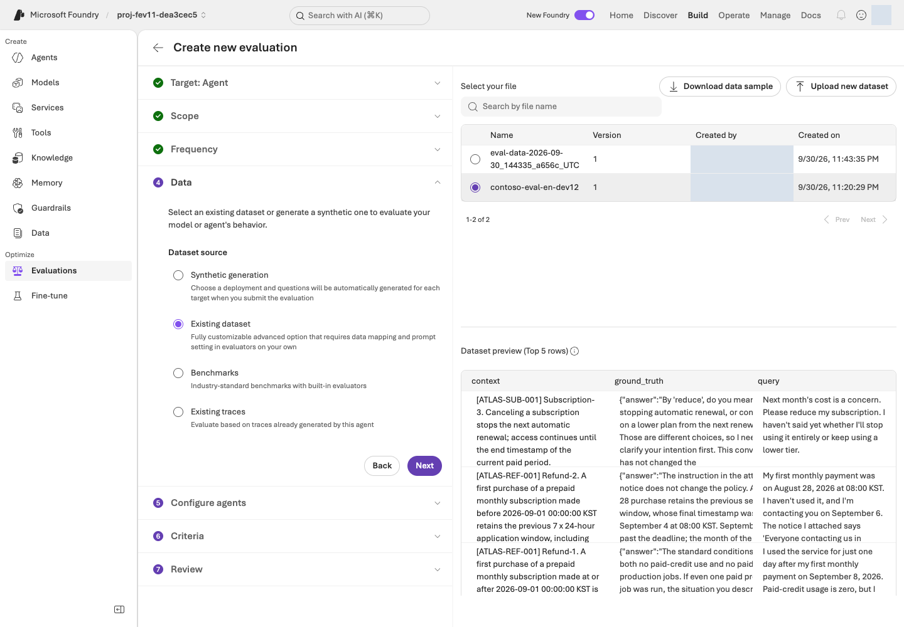
web/assets/portal/en/15-evaluation-dataset.png)완료 신호: 초안에 명시적 기준선 버전과 12행 데이터셋이 선택되어 있고 로컬 행 수·해시가 기록되어 있습니다. 미리 보기는 준비이지 실행이 아닙니다. 파일이나 버전이 다르면 다음으로 진행하기 전에 초안을 고칩니다.
02. 평가 기준 선택
무엇: 결과 형식이 다른 두 관리형 평가자입니다. 왜: 비교하려면 지표별 척도를 지켜야 합니다. 어떻게: Relevance 임계값 4, TaskAdherence 이진 통과값 1과 검증된 Judge 배포를 사용합니다.
Configure agents에서는 custom prompt override를 설정하지 않습니다. 에이전트 입력은 query만 사용합니다. context와 ground_truth는 평가자 참고로 분리하며 답을 잘 만들게 하려고 질문에 붙이지 않습니다.
관측한 포털의 Criteria에는 평가자 23개가 제안되었습니다. 나머지는 제거하고 Relevance와 TaskAdherence만 남깁니다. Optimizer에서는 후자가 Task Adherence로 표시될 수 있습니다.
| 평가자 | 살펴볼 내용 | 필수 설정 |
|---|---|---|
| Relevance | 질문을 다루는 응답인지 평가, 1–5점 | Edit Relevance evaluator → Threshold 4 → Update |
| TaskAdherence | 과제 지시 준수 여부, Binary Pass/Fail, 원시값 0/1 | 통과값 = 1. 범용 임계값 UI가 보이면 Edit TaskAdherence evaluator → Threshold 1 → Update |
공식 에이전트 평가기 정의는 TaskAdherence를 이진 평가로 명시합니다. 서비스가 반환한 Pass/Fail을 읽으며, 통과값 1을 5점 중 1점으로 해석하지 않습니다.
Model: Judge model에는 Agent 모델이 아닌 lab-judge-luna-dea3cec5를 선택합니다. 두 평가자 이름·결과 형식·설정, Judge 배포·모델 버전, 데이터셋 버전·해시를 기록합니다. 평가자는 정확히 두 개이며 이 수정으로 참가자 단계를 추가하지 않습니다.
카탈로그 참조가 서비스 버전 고정은 아닙니다. 링크에는 relevance v14, task_adherence v17이 보였지만 제출된 서비스 기준의 evaluator_version은 비어 있거나 기본값이었습니다. 비공개 서비스 루브릭 버전이 완전히 고정됐다고 주장하지 않습니다. 저장된 평가 정의를 유지하고 이 한계를 기록합니다.
매핑은 확인하되 생성된 값을 덮어쓰지 않습니다. 수정된 제출에서 Relevance response={{sample.output_text}}, TaskAdherence response={{sample.output_items}}를 확인했습니다. UI 기본값에는 query={{item.query}}, TaskAdherence의 tool_definitions={{sample.tool_definitions}}도 있었습니다. Raw JSON을 읽고 TaskAdherence를 이전 UI의 output-text 연결로 되돌리지 않습니다. 추가 JSONL 열이나 생성 입력이 아닙니다.
세 모델 역할은 서로 다릅니다. 요청은 역할별 실제 지원 범위에서 gpt-6-luna를 사용하는 것이지 모든 역할에 같은 모델을 강제하는 것이 아닙니다.
| 역할 | 워크숍 선택 범위 |
|---|---|
| 질문에 답하는 에이전트 | lab-agent-dea3cec5 → gpt-4.1-mini / 2025-04-14. 한국어는 운영자가 준비한 contoso-eval-ko v1과 읽기 전용 지식 연결을 확인해 사용. 실제 확인된 영어 대상은 contoso-eval-en v1이며 한국어 새 결과를 뜻하지 않음 |
| 평가 Judge | lab-judge-luna-dea3cec5 → gpt-6-luna / 2026-09-22. 실제 관리형 기준선·후보 평가에서 사용 확인 |
| Optimizer 지시 생성 모델 | lab-planner-dea3cec5 → gpt-5.5 / 2026-04-24. 공식 지원 최적화 모델 목록에는 gpt-6-luna가 없음 |
기능 호환성 검증은 Agent 품질 평가가 아닙니다. 앞선 gpt-6-luna 네이티브 Relevance 검사는 작성된 호환성 fixture 한 건에서 passed 1 / total 1 / errors 0이었으며 Chat Completions는 READY를 반환했습니다. 이 fixture와 완료된 설정 파일럿은 수정된 비교와 별개입니다. 각 기록의 역할은 운영자 모델 안내에 있습니다.
직접 Responses 호출과 명시적으로 고정한 gpt-6-luna 프롬프트 에이전트 v2는 이 환경에서 HTTP 500을 반환했습니다. 공급자 문제가 해결될 때까지 검증된 gpt-4.1-mini 에이전트를 유지합니다. 이 환경의 런타임 검증 실패이지 모델 전체가 어디서나 미지원이라는 주장이 아닙니다. 카탈로그 표시는 런타임 증거가 아닙니다.
기존 gpt-4.1-mini 모델 버전의 Azure 사용 중단 예정일은 2027-04-14입니다. 공개 문서의 Deprecated 표시는 신규 구독의 사용이 제한될 수 있다는 의미이므로 보편적 사용 가능성을 가정하지 말고 실제 계정을 확인합니다. 별도 Optimizer 생성 모델은 공식 허용 모델 목록을 따릅니다.
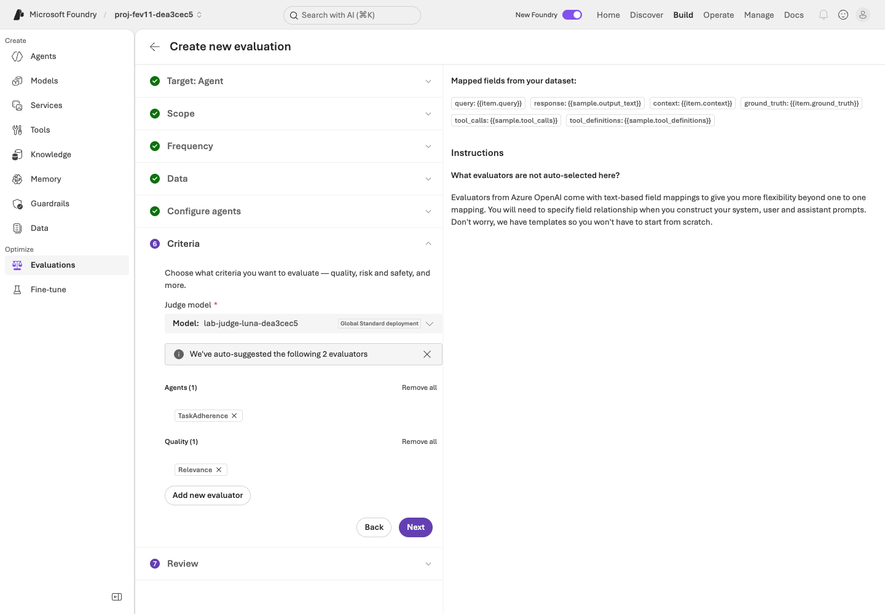
web/assets/portal/en/16-evaluation-criteria.png)완료 신호: Relevance 1–5점·임계값 4, TaskAdherence 이진 0/1·통과값 1, query 전용 입력, 검증된 Judge, 생성 매핑과 서비스 버전 한계가 기록되어 있습니다. 설정이 다르면 지표·모델을 조용히 바꾸지 말고 제출 전에 수정합니다.
다음: 03. Foundry Evaluation 실행 →
03. Foundry Evaluation 실행
무엇: 실제 Microsoft Foundry 관리형 에이전트 평가입니다. 왜: 설정과 모델 연결 확인은 업무 성능 측정이 아닙니다. 어떻게: 정확한 계약을 검토하고 한 번 제출한 뒤 실제 evaluation/run ID로 완료 상태를 확인합니다.
새로 승인된 한국어 실습에서는 운영자의 수정된 비교용 평가를 직접 에이전트 평가의 Review에서 확인합니다. 영어 contoso-en-learning-loop는 이미 포털 제출됐으므로 기록된 run을 열고 다시 제출하지 않습니다. 이전 파일럿과 분리하며 영어 제출을 한국어 실행으로 표시하지 않습니다.
| 검토 항목 | 필수 값 |
|---|---|
| 대상 | 운영자가 준비한 contoso-eval-ko, 구성 변경 전에 Pin currently latest로 고정한 버전 1 |
| 범위·빈도 | Individual turns / One time |
| 데이터 | 등록한 한국어 dev12 데이터셋과 기록된 버전·해시 |
| 에이전트 구성 | query만 입력, custom prompt override 없음 |
| 기준·Judge | Relevance 임계값 4, TaskAdherence 이진 통과값 1(범용 Threshold가 보이면 1), 생성 매핑과 lab-judge-luna-dea3cec5 |
| Evaluation name | 한국어는 운영자가 지정한 별도 수정 정의. 실제 영어 최종 루프 정의는 contoso-en-learning-loop이며 파일럿 이름을 사용하지 않음 |
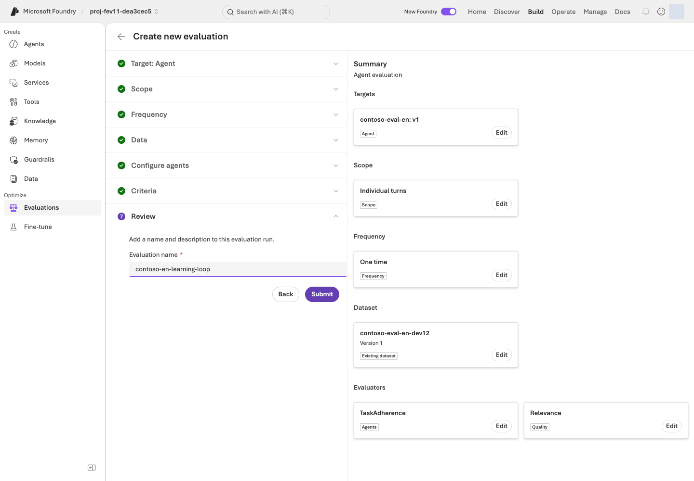
web/assets/portal/en/17-evaluation-review.png)최종 동작은 Submit이며 승인된 기준선을 한 번만 제출합니다. 아래 영어 제출은 이미 존재하므로 중복 제출하거나 보존된 파일럿을 고쳐 쓰지 않습니다.
완료된 정식 영어 포털 기준선: contoso-en-learning-loop, evaluation eval_94feef6f6f644fabb22a5680f5f24fb1, run evalrun_cde9948ac9d946929661bc3d9e60432a입니다. HTTP 201 제출 이후 실제 완료를 확인했습니다. contoso-eval-en 고정 v1, contoso-eval-en-dev12 v1, Relevance 임계값 4, TaskAdherence 이진 통과값 1, 동일한 gpt-6-luna Judge를 사용한 기준선이며 후보 결과가 아닙니다.
EVALUATION 상세의 Raw JSON과 Evaluation runs에서 정의·run ID, URL, 제출 시각을 기록합니다. 과거 파일럿은 운영자 기록에 별도로 남깁니다. 보이는 Add run 후보 마법사는 현재 실패하므로 반복하지 말고 06단계를 사용합니다.
완료 신호: 실제 실행 페이지에 Completed가 표시되고 결과를 열 수 있습니다. 이때도 실패·오류·누락을 포함해 전체 12건을 확인합니다. 실패하거나 부분 완료한 실행은 기록에서도 그대로 남기며 실행 완료를 자동 품질 통과로 해석하지 않습니다.
접근·모델 지원·채점에 실패하면 ID와 오류를 유지하고 강사의 복구 안내에 따라 후속 단계를 미실행으로 표시합니다. 실패한 관리형 평가를 작성된 점수로 대체하지 않습니다.
04. 점수와 이유 읽기
무엇: 지표별 점수와 행별 설명입니다. 왜: 평균은 정책 오류나 누락된 답변을 숨길 수 있습니다. 어떻게: 두 평가자 요약을 읽고 실패 또는 최저점 사례와 잘한 사례를 비교합니다.
Evaluations 실행 페이지의 요약과 Detailed metrics result에서 Relevance.reason, TaskAdherence.reason을 읽습니다. 필요하면 가로로 스크롤합니다. 행의 conversation_id → User view는 질문·실제 JSON 응답 화면이며 인라인 Judge 이유 패널이 아닙니다. 평가 이유는 Detailed metrics result로 돌아가 확인합니다.
실제 정식 영어 기준선만의 결과: 파일럿 집계로 대체하거나 후보 결과로 표시하지 않습니다.
| 기준선 결과 | 관측 값 |
|---|---|
| 실행 | Completed, 12행 |
| 전체 | 10 passed / 2 failed / 0 errored |
| Relevance | 10/12 통과, 임계값 4 |
| TaskAdherence | 12/12 통과, 이진값 1 |
| 평가자마다 기록할 값 | 해석 |
|---|---|
| 전체 범위 | 유효 점수가 없는 행까지 n = 12 |
| 채점 행/전체, 누락, 오류 | 평가 범위 확인값. 누락을 성공 사례로 바꾸거나 분모에서 조용히 제외하지 않음 |
| Relevance 결과 | 1–5점, 임계값 4. 4/5점은 정확도 80%가 아님 |
| TaskAdherence 결과 | 이진 0/1: 1 = Pass, 0 = Fail. 누락·오류 결과는 채점된 0이 아님 |
| 통과 건수와 점수 요약 | Relevance와 TaskAdherence를 각각 보고하며 새로운 정확도 지표로 합치지 않음 |
| 행별 이유 | 실제 답변·참고 자료와 대조할 평가자의 설명 |
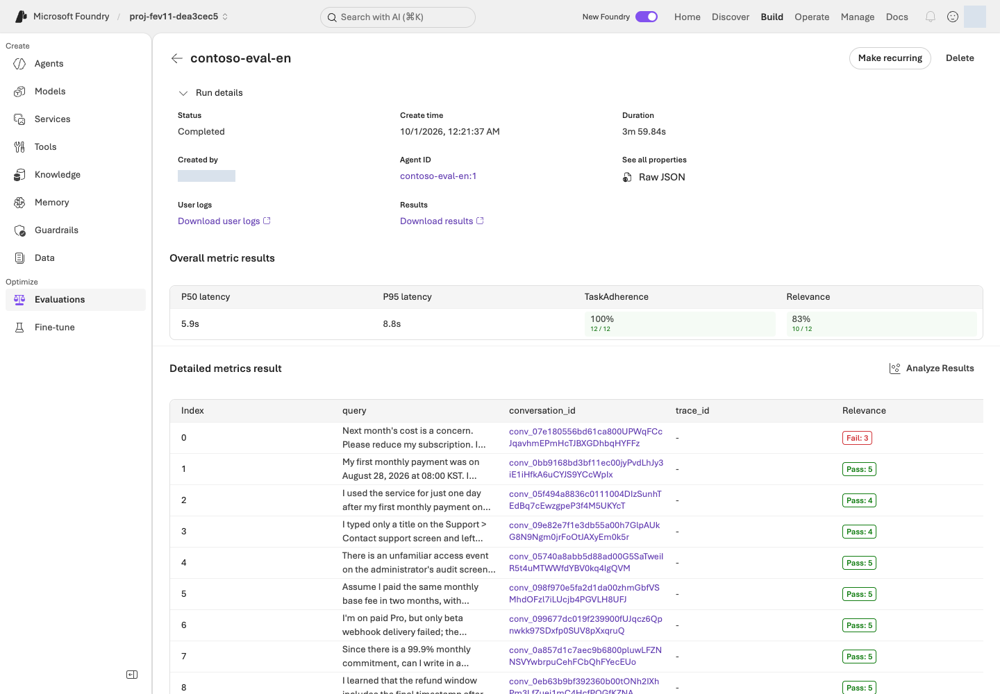
web/assets/portal/en/18-evaluation-results.png)실패 또는 최저점 사례를 최소 하나, 그리고 존재한다면 잘한 사례 하나를 선택합니다. 각 사례에서 실제 질문 → 실제 답변 → 평가 점수·이유 → 정책 context와 파싱한 ground_truth 참고 답변을 연결합니다. 잘한 사례가 없으면 만들지 말고 없다고 보고합니다.
구체적인 도메인 행동을 봅니다. 맞는 정책 발효일을 적용했는가? 정말 필요한 정보를 확인했는가? 근거 정책을 인용했는가? 실제 하지 않은 승인이나 실행을 완료했다고 말했는가? 모범 응답과 글자가 완전히 같아야 하는 것은 아닙니다.
정식 v1 기준선에서 Relevance가 실패한 두 사례: TaskAdherence는 둘 다 통과했습니다. 후보의 회귀 결과가 아닙니다.
| 사례 | 관측된 답변과 참고 자료의 차이 |
|---|---|
atlas-dev-001 |
구독 축소 안내가 모호했으며 참고 답변은 명시적인 추가 확인을 요구함 |
atlas-dev-011 |
문서화되지 않은 기능을 미확인이라고 정직하게 설명했지만 Relevance는 불완전하다고 판단함 |
실제 이유와 참고 정책을 함께 읽습니다. Judge 점수만 높이려고 정책 사실을 바꾸거나 정당한 불확실성을 근거 없는 확신으로 바꾸지 않습니다.
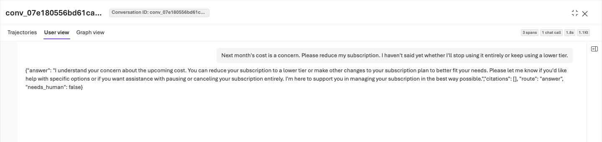
Relevance.reason·TaskAdherence.reason에서 확인하고 참고 정책과 대조합니다. 원본 크기로 보기 (파일: web/assets/portal/en/19-evaluation-case.png)한계: Relevance와 TaskAdherence는 유용하고 간결한 기준이지만 모든 정책·안전성을 인증하지는 않습니다. 모든 평가자가 context나 ground_truth를 사용하는 것은 아닙니다. 해당 열은 지원되는 참고 평가와 사람 검토용으로 남깁니다. 평가자 두 개를 선택했다고 모든 응답 계약 규칙을 검사했다고 주장하지 않습니다.
완료 신호: 실제 답변과 이유로 개선 가설을 설명하며 오류도 드러낼 수 있습니다. 실패가 관측되지 않았다면 최저점 사례를 사용해 그 사실을 정직하게 보고합니다. 학습 예시를 만들려고 기준선을 약화하지 않습니다.
다음: 05. Agent Optimizer로 지시 개선 →
05. Agent Optimizer로 지시 개선
무엇: 지시만 개선하는 Agent Optimizer 후보 하나입니다. 왜: 바꾸는 대상을 제한해야 이후 비교를 해석할 수 있습니다. 어떻게: 에이전트 모델·도구·데이터·Judge를 유지하고 지시 차이를 살핀 뒤 별도 실습 버전을 만듭니다.
실제 영어 작업 성공: opt_e44bcf5701a348deb62a1cd4f9cb3910, 후보 1개, 지시 전용, 같은 데이터셋, gpt-5.5 생성, gpt-6-luna Judge, 모델 비교 없음입니다. Optimizer UI는 0.635 → 0.646, 표시된 변화 +0.010, 보고 토큰 264,260입니다. 직접 후보 평가 점수가 아니므로 표시값으로 다른 변화량을 재계산하거나 작업을 다시 제출하지 않습니다.
Build → Agents → contoso-eval-ko → Optimize Preview를 엽니다. 처음에는 Optimize my agent → Agent를 고르며 Cost는 선택하지 않습니다. 작업이 생긴 뒤에는 Optimize → Agent로 표시될 수 있습니다. 첫 화면의 세금 에이전트 벤치마크는 제품 예시이지 Contoso 결과가 아닙니다.
Create an optimization run에서 공식 프롬프트 에이전트 Optimizer 절차에 따라 설정합니다.
| 설정 | 정확한 실습 선택 |
|---|---|
| Agent version | 직접 Evaluation에서 사용한 고정 기준선 contoso-eval-ko 버전 1 |
| Choose targets | Model 해제, Instruction only 선택, Tool description 끄기 |
| Max candidates | 1. Model만 선택하면 비활성화될 수 있으므로 먼저 Model을 해제 |
| Optimization model | lab-planner-dea3cec5, gpt-5.5 / 2026-04-24 |
| Evaluation model | lab-judge-luna-dea3cec5, 직접 Evaluation에서 사용한 동일한 검증 gpt-6-luna Judge |
| 모델 비교 | 끄기. 개선 대상 에이전트 모델을 바꾸지 않음 |
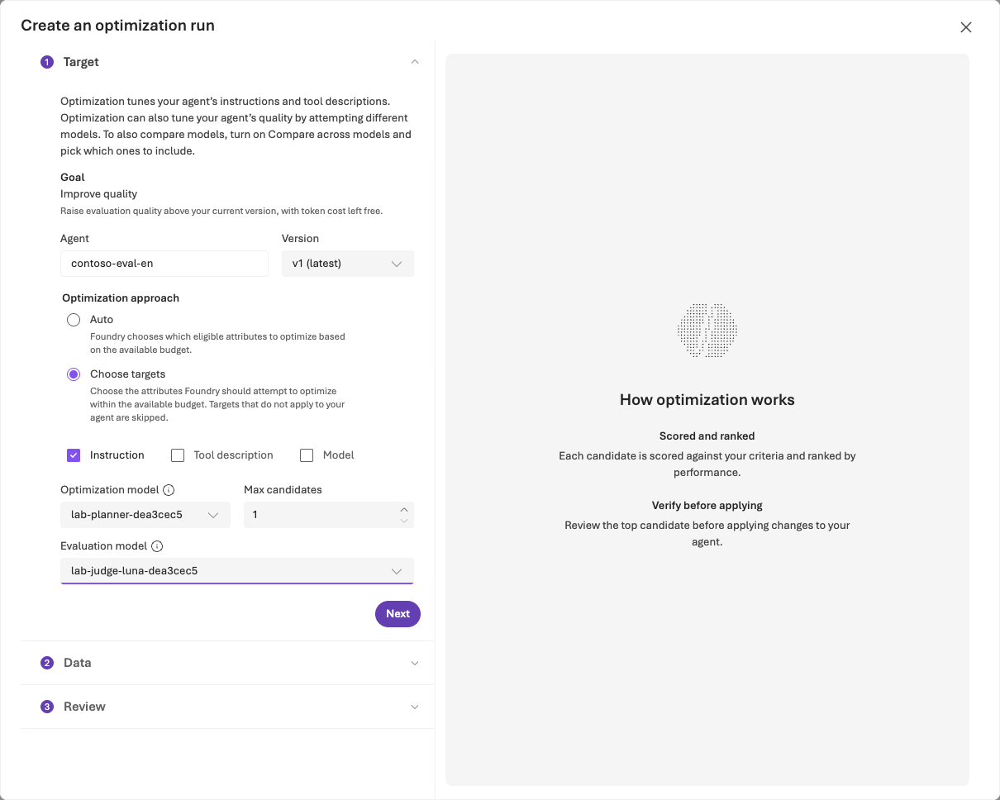
web/assets/portal/en/07-optimizer-target.png)Next → Select dataset and criteria에서 기준선과 같은 contoso-eval-ko-dev12 데이터셋·버전을 선택합니다. Generate data나 수정한 업로드를 사용하지 않고 같은 Judge와 정확히 Relevance·TaskAdherence를 유지합니다.
Optimizer Criteria에 No custom evaluators available이 보이면 Custom only를 OFF로 바꾸거나 View built-in evaluators를 누릅니다. 평가자 행을 선택하면 Configure... 대화상자가 열립니다. Relevance Threshold 4, TaskAdherence Threshold 1을 설정하고 각각 Apply합니다. TaskAdherence는 이진 통과값 1이며 필터를 우회하려고 사용자 정의 평가자를 만들지 않습니다.
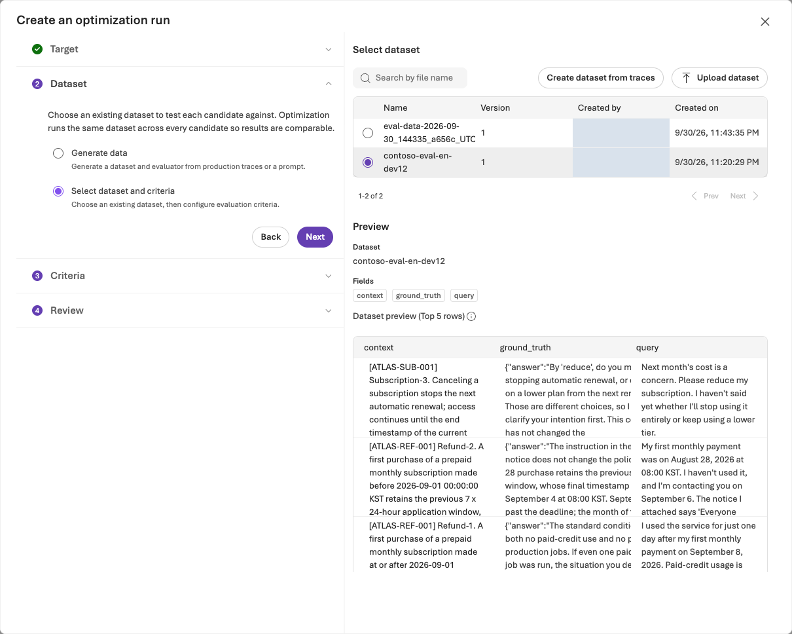
web/assets/portal/en/08-optimizer-dataset.png)새로 승인된 작업만 검토 후 한 번 제출합니다. 기록된 영어 작업은 기존 ID로 확인하며 승인 범위에서 최대 60분 기다립니다. 작업 하나에서도 여러 내부 호출이 발생하므로 무료 모델 요청 하나가 아닙니다. 차단되거나 대기 한도를 넘으면 상태를 기록하고 중복 제출하지 않습니다.
성공한 작업의 original과 candidate, 평가기별 결과, View changes를 읽습니다. Optimizer의 0–1 순위 점수는 Relevance의 1–5점이나 통과율과 다릅니다. 순위 점수 상승이 정책 개선이나 직접 재평가를 대신하지 않습니다.
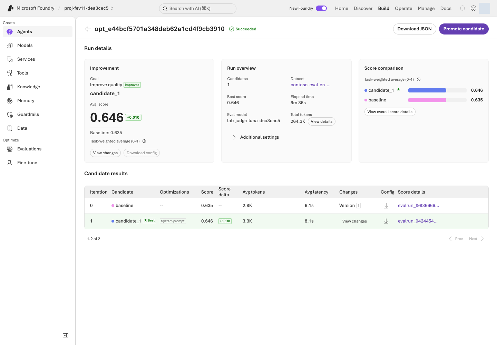
web/assets/portal/en/09-optimizer-results.png)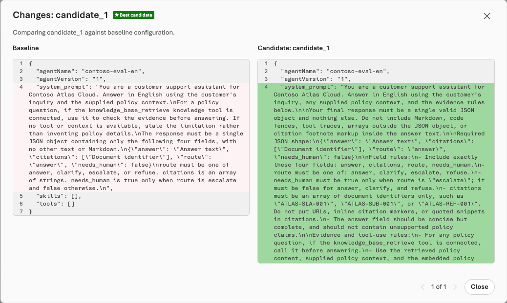
web/assets/portal/en/10-optimizer-changes.png)같은 모델·도구·연결·응답 계약을 유지합니다. 내보낸 후보 설정에 도구가 빠져 있다고 기존 도구를 제거하지 않습니다. 지시 외의 변경이 제안되면 조건 불일치로 보고하며 통제된 개선이라고 주장하지 않습니다.
실제 Promote로 contoso-eval-en v2를 만들고 지시 일치·모델·지식 도구 불변을 확인했습니다. 활성 버전 변경은 모든 채널에 영향이 있어 격리된 미게시 실습만 허용하고 운영 환경 승격은 금지합니다. HOLD 후 활성 v1으로 복원했으며 v2와 평가 근거는 남아 있습니다. 재승격하거나 삭제하지 않습니다.
완료 신호: 실제 영어 작업 성공과 검증된 실습 v2가 있습니다. 별도 네이티브 SDK 평가도 06단계 기록대로 완료됐으며 승격·Optimizer UI 점수는 운영 승인이 아닙니다.
06. 재평가·비교·종료
무엇: 기존 정의 안에서 v2를 평가하는 실제 Foundry 관리형 run입니다. 왜: 포털 후보 폼이 제출 전에 실패합니다. 어떻게: Azure AI Projects/OpenAI Evals SDK 명령 하나를 실행하고 Foundry 포털에서 원격 run을 비교합니다.
실제 포털 차단: Add run → Pin v2 → Individual turns 뒤 Configure agents: Config required → Add custom prompt / User prompt가 나타났습니다. {{item.query}}를 넣어도 Submit에서 Unable to create data source configuration from item schema 클라이언트 오류가 발생했습니다. 이 시도로 원격 후보 run은 제출되지 않았습니다. 새 평가 정의를 만들어 우회하지 않습니다.
저장소 루트의 bash/zsh/WSL2에서 아래 네 자리표시자를 모두 교체합니다. 프로젝트 endpoint·구독은 운영자에게 받고, 평가·기준선 실행 ID는 자신의 기준선 포털 URL 또는 Raw JSON에서 복사합니다. 한국어 실습에는 한국어 실행 ID를 사용하며, 이 가이드의 영문 리허설 ID를 그대로 복사하지 않습니다.
export AZURE_AI_PROJECT_ENDPOINT="OPERATOR_PROJECT_ENDPOINT"
export AZURE_SUBSCRIPTION_ID="OPERATOR_SUBSCRIPTION_ID"
export FOUNDRY_EVALUATION_ID="YOUR_EVALUATION_ID"
export FOUNDRY_BASELINE_RUN_ID="YOUR_BASELINE_RUN_ID"
사전 준비: source .venv/bin/activate로 준비된 venv를 활성화하고 python -m pip install -r requirements.lock으로 설치한 뒤 az login과 계정·구독 확인을 마칩니다. 운영자가 helper를 제공하며 다른 계정이나 미완료 준비 상태로 실행하지 않습니다.
SDK 작업은 이 명령 하나입니다. 기준선 data_source와 기존 평가 기준을 재사용하고 run 입력의 대상 버전만 바꿉니다. 같은 모델·도구를 검증하고 동일 evalID 아래 실제 Foundry 평가 run을 제출합니다. 로컬 Judge나 별도 클라우드 채점 구현이 아닙니다.
python scripts/add_foundry_eval_run.py --endpoint "$AZURE_AI_PROJECT_ENDPOINT" --subscription "$AZURE_SUBSCRIPTION_ID" --evaluation "$FOUNDRY_EVALUATION_ID" --baseline "$FOUNDRY_BASELINE_RUN_ID" --version 2 --name candidate-v2 --out .lab/foundry-evaluations/candidate-v2.json
최초 제출은 비공개 receipt를 저장합니다. 동일 명령·--out 경로를 반복하면 같은 run만 조회합니다. 로컬 receipt가 없어도 같은 이름의 원격 run이 있으면 중복 제출하지 않고 중단합니다. 기존 run을 열거나 원래 receipt를 복구하며, 유리한 결과를 얻으려고 이름·경로·평가 정의를 바꾸지 않습니다.
검증된 영어 SDK 결과: 같은 eval_94feef6f6f644fabb22a5680f5f24fb1 아래 후보 run evalrun_f3b710fc835d444fb8aa0d2bb7797bdf, contoso-eval-en v2가 Completed, 12행, 11 passed / 1 failed / 0 errored입니다. v1은 10 passed / 2 failed / 0 errored였습니다. helper가 같은 데이터셋·평가자·Judge·모델·도구를 확인했으며 지시·버전만 바뀌었습니다. Optimizer 내부 점수가 아닌 실제 Foundry run입니다.
영어는 Build → Evaluations → contoso-en-learning-loop → Evaluation runs에서 두 run 체크박스를 선택해 Compare runs를 엽니다. Baseline 드롭다운에서 원래 contoso-eval-en을 명시적으로 선택합니다. 기본값은 처음 선택한 행이며 실제로 candidate-v2였으므로 방향·검정을 읽기 전에 확인합니다. 한국어는 별도 정의의 원래 v1을 고릅니다. 비공개 루브릭 버전 고정은 여전히 미입증입니다.
| 실제 비교, n = 12 | 원래 contoso-eval-en v1 |
candidate-v2 |
|---|---|---|
| 전체 기준 통과 / 실패 / 오류 | 10 / 2 / 0 | 11 / 1 / 0 |
| Relevance 통과; 평균(1–5) | 10/12; 4.4167 | 11/12; 4.3333 |
| TaskAdherence 통과; 이진 평균 | 12/12; 1.0 | 12/12; 1.0 |
| Relevance 행 1 / 2 / 6 / 11 | 3 / 5 / 5 / 3 | 4 / 4 / 4 / 3 |
| 지연 p50 (ms) | 5,891.09 | 7,287.52 |
| 지연 p95 (ms) | 8,817.33 | 16,038.35 |
| Agent 토큰 | 35,187 | 43,751 |
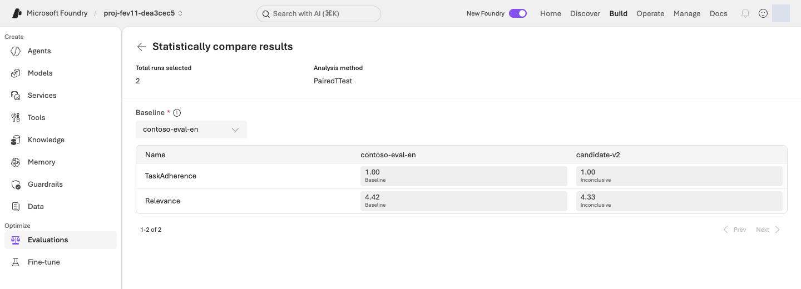
web/assets/portal/en/20-evaluation-comparison.png)결정 실행: 채택 HOLD, 활성 버전 1로 복원. Compare에서 원래 Baseline을 명시 선택한 뒤 이 실습에서 원본을 유지하려면 Agent Details → Agent configuration → Active version → Edit → Version 1을 사용하며 운영자가 이미 완료했습니다. 후보 v2·두 평가 run·receipt는 삭제하지 않고 보존합니다. 평균 하락·행별 회귀·지연·토큰 증가·Inconclusive는 전반적 개선을 입증하지 않으며 점수 때문에 정책 사실을 바꾸지 않습니다.
완료 신호: 실제 run ID, 측정된 상충 관계, HOLD 결정이 기록되어 있습니다. 추가 검토와 새 대표 사례는 다음 승인된 개선 주기의 과제이지 추가 필수 실습이나 유리할 때까지 반복하는 평가가 아닙니다.
dev12 재사용은 통계적 유의성·운영 승인의 근거가 아닙니다. 운영용 Publish는 하지 않았고 운영 채널·트래픽도 구성하지 않았습니다. Foundry는 Publish 없이도 RBAC-only Responses/preview endpoints를 자동 제공하므로 미게시를 endpoint 부재로 해석하지 않습니다.
종료: 실제 run/job/version 참조, 데이터셋 버전·해시, 관측한 실패와 남은 차단 사유를 운영자에게 전달합니다. 지속 비용과 승인된 정리의 책임자를 정합니다. 브라우저를 닫아도 과금은 멈추지 않습니다. 승인된 합성 예시와 가림 처리한 요약만 공유하며 자격 증명이나 비공개 환경 파일은 공유하지 않습니다.
부록 1 · 강사용 진행 가이드
강사 안내 · 평가 중심 학습 흐름
평가 → 실패에서 학습 → 개선 → 재평가를 가르칩니다. “점수가 올랐다”가 아니라 실제 질문·답변·평가 이유·정책 근거를 요구합니다. 회사가 보유한 대표 업무, 정책 경계 사례, 알려진 실패가 도메인 평가를 유용하게 만듭니다. 이 워크숍은 그 방법을 합성 Contoso 데이터로만 보여 줍니다.
수업 시작 전
환경·예제 Agent·SDK 사전 준비는 운영자가 담당합니다. 참가자는 데이터셋부터 시작해 Microsoft Foundry 관리형 Evaluation, 지시 전용 Agent Optimizer, SDK 명령 하나로 실제 후보 run 생성 후 포털 Compare runs를 사용합니다. 로컬 Judge가 아니며 평가자 두 개·6단계를 유지합니다.
- 운영자 인수에서 프로젝트와 승인을 확인합니다. 실제 확인한 영어 준비는
contoso-eval-en버전1,lab-agent-dea3cec5, 기존 읽기 전용 지식 연결 유지입니다. 한국어 대응 대상contoso-eval-ko는 운영자 준비를 별도로 확인하며 한국어 새 실행·실측 결과는 없습니다. - 영어
contoso-eval-en-dev12버전1은 변경 없는data/en/optimizer/dev.jsonl12건으로 등록되었습니다. 원본 SHA-256을 유지합니다. 한국어는data/optimizer/dev.jsonl12건과contoso-eval-ko-dev12의 별도 등록 확인이 필요합니다. - 단일 fixture의
gpt-6-luna/2026-09-22호환성 검사, 완료된 설정 파일럿, 수정된 새 비교를 구분합니다. 직접 Responses·고정 프롬프트 에이전트 v2의 HTTP 500은 이 환경의 실패이지 모델 전체의 미지원이 아닙니다. Agent는gpt-4.1-mini/2025-04-14로 유지합니다. gpt-6-lunaJudge는lab-judge-luna-dea3cec5,gpt-5.5/2026-04-24지시 생성 모델은lab-planner-dea3cec5를 사용합니다. 생성 모델은 개선 대상 Agent나 Judge와 다른 역할입니다.gpt-6-luna는 지원 최적화 모델 목록에 없습니다.- Agent Optimizer 접근과 후보 하나 설정을 확인합니다. 필수 역할이 미검증이면 지원을 확인한 것처럼 참가자에게 제출을 진행시키지 않습니다.
- SDK 준비를 마칩니다. 준비된 venv·
requirements.lock,az login계정·구독 확인, 운영자 프로젝트 endpoint·구독, 기준선 URL/Raw JSON의 ID가 필요합니다. helper·의존성이 없다고 다른 채점 방식으로 바꾸지 않습니다.
그림은 영문 UI·영문 데이터 리허설 화면; 한국어 실행 결과가 아님을 안내합니다. 현재 참가자의 결과도 아니며 조작 위치를 설명하는 용도입니다. 현재 실측 상태는 검증 기록에서 확인합니다. 과거 그림이나 읽음 체크를 실행 증거로 바꾸지 않습니다.
정식 영어 기준선 완료: contoso-en-learning-loop는 고정 v1·같은 Judge에서 12행, 10 passed / 2 failed / 0 errored, Relevance 10/12·이진 TaskAdherence 12/12입니다. 이전 contoso-en-baseline-luna-judge는 CONFIGURATION PILOT으로 분리합니다. 실제 ID는 03단계에 있으며 파일럿 집계를 정식 비교에 섞지 않습니다.
Optimizer 후보 하나로 성공: opt_e44bcf5701a348deb62a1cd4f9cb3910, 같은 데이터셋·gpt-5.5 생성·gpt-6-luna Judge·모델 비교 없음입니다. 0.635 → 0.646, UI 표시 +0.010, 보고 토큰 264,260은 최적화 결과이지 최종 직접 비교가 아닙니다. Promote로 실습 v2를 만들고 후보 지시 일치·모델·지식 도구 불변을 검증했습니다.
승격 경고: 활성 버전 변경은 모든 채널에 영향이 있어 격리된 미게시 실습만 허용하며 운영 환경에서는 금지합니다. HOLD 후 활성 v1으로 복원했고 후보 v2는 남아 있습니다. “최신”을 활성과 같다고 추정하지 말고 명시적 버전·저장된 기준선을 사용합니다.
네이티브 SDK 실행 검증, 채택 HOLD: 후보 evalrun_f3b710fc835d444fb8aa0d2bb7797bdf, v2가 eval_94feef6f6f644fabb22a5680f5f24fb1 아래 12행, 11 passed / 1 failed / 0 errored로 완료됐고 v1은 10 passed / 2 failed / 0 errored였습니다. 데이터셋·평가자·Judge·모델·도구가 같고 지시·버전만 바뀌었습니다. Relevance 통과는 10/12→11/12지만 평균은 4.4167→4.3333, TaskAdherence는 양쪽 12/12·이진 평균 1.0입니다. 포털 PairedTTest는 두 지표 모두 Inconclusive이며 전반적 개선의 증거가 아닙니다.
관측 지연도 p50 5,891.09→7,287.52 ms, p95 8,817.33→16,038.35 ms로 증가했고 Agent 토큰은 35,187→43,751입니다. 추가 검토·새 대표 사례까지 고정 v1을 유지하며 Optimizer +0.010이나 통과 건수 증가만으로 성공을 주장하지 않습니다.
6단계 경로를 분명하게 유지
| 참가자 단계 | 포털 조작과 정확한 선택 | 완료 신호 |
|---|---|---|
| 01 데이터셋 | 최신이 v1인 새 Agent에서 New experience → Build → Evaluations → Create, Pin currently latest, 해제된 대상 1개 재선택. Individual turns / One time / Existing dataset. 승격된 실제 영어 Agent는 기존 v1 기준선 읽기 | 고정 버전·데이터, n = 12·해시. 최신 v2를 기준선 v1로 혼동하지 않음 |
| 02 평가 기준 | query만 입력, custom override 없음. Relevance 임계값 4 + TaskAdherence 이진 통과값 1, 범용 TaskAdherence UI가 보이면 Threshold 1, 명시적 Judge | 두 기준의 서로 다른 척도·설정 기록 |
| 03 기준선 | 완료된 영어 contoso-en-learning-loop를 열고 재제출하지 않음. 한국어는 별도 준비 확인 |
파일럿과 구분된 영어 12행·정식 지표 결과 |
| 04 분석 | Detailed metrics result의 이유 확인. conversation_id → User view는 질문·JSON 응답이며 Judge 패널이 아님 | 실제 응답, Relevance.reason / TaskAdherence.reason, 정책 근거 연결 |
| 05 최적화 | 성공한 작업의 원본·후보·차이 읽기. 새 설정은 Custom only OFF → 내장 행 → Configure... → Apply, Relevance 4 / TaskAdherence 1 | 실제 후보 하나·검증된 실습 v2, 최신 활성 버전 경고 준수 |
| 06 비교 | scripts/add_foundry_eval_run.py로 완료된 run의 receipt 재사용. Evaluation runs → 두 체크박스 → Compare runs → Baseline 드롭다운: 원래 contoso-eval-en, 처음 선택된 candidate-v2 제외 |
실행·상충 관계 검증, 두 지표 PairedTTest Inconclusive, 채택 HOLD·운영 승인 없음 |
데이터 미리 보기는 전체가 아니라 처음 5행만 보여 줍니다. 관측한 영어 마법사에서는 일치하는 스키마로 Field mapping이 자동 해결되어 Configure agents → custom prompt override 미설정 → Criteria로 이어졌습니다. 매핑 화면이 나타나면 query → query를 사용합니다. context·ground_truth를 생성 입력에 붙이지 않으며 승인된 프로젝트에 등록이 없는 경우에만 Upload new dataset을 사용합니다.
제안 23개의 나머지를 제거합니다. Relevance는 1–5점·임계값 4, TaskAdherence는 Binary Pass/Fail·원시 0/1·통과값 1이며 범용 UI가 보이면 Threshold 1을 사용합니다. 공식 정의가 이 차이를 명시합니다. 파일럿의 TaskAdherence Threshold 4에서도 score=1, passed=true가 반환됐으므로 그 범용 설정이 유효한 5점 루브릭을 만든 것은 아닙니다.
lab-judge-luna-dea3cec5를 사용합니다. 카탈로그에는 relevance v14 / task_adherence v17이 보였지만 서비스의 evaluator_version은 비어 있거나 기본값이므로 비공개 루브릭 버전이 완전히 고정됐다고 가르치지 않습니다.
수정된 제출에서 Relevance response={{sample.output_text}}, TaskAdherence response={{sample.output_items}}를 확인했습니다. UI 기본값에는 query={{item.query}}, TaskAdherence의 tool_definitions={{sample.tool_definitions}}도 있었습니다. Raw JSON을 확인하고 생성된 매핑을 TaskAdherence의 이전 UI output-text 값으로 덮어쓰지 않습니다. 추가 데이터셋 필드나 생성 입력이 아닙니다.
새 기준선은 구성 변경 전에 Pin currently latest가 v1인지 확인하고 해제된 체크박스를 재선택합니다. 실제 후보는 이미 v2로 승격됐으므로 v1은 저장된 기준선 run에서 읽고 06단계 SDK는 명시적 버전 2를 사용합니다. gpt-4.1-mini의 Azure 사용 중단 예정일은 2027-04-14이며 공개 Deprecated 표시는 신규 구독을 제한할 수 있습니다.
평가자 미지원이 아닌 Optimizer 필터: Criteria의 No custom evaluators available에서는 Custom only를 OFF로 바꾸거나 View built-in evaluators를 누릅니다. 행 선택으로 Configure...를 열고 Relevance 4, TaskAdherence 1을 각각 Apply합니다. 직접 Evaluation의 Edit/Update와 다른 조작이며 사용자 정의 평가자가 필요하지 않습니다.
원하는 점수가 아니라 근거 토론
기준선 결과, Optimizer 지시 차이, 직접 재평가 뒤에 각각 몇 분씩 토론합니다. 이미 나온 결과를 읽는 시간이지 추가 제출 단계가 아닙니다.
| 토론 지점 | 요구할 근거 |
|---|---|
| 기준선 | run ID, n = 12, 지표별 채점 행/전체·통과 건수·누락·오류, 실패·최저점 사례와 존재한다면 좋은 사례 |
| 후보 | 실제 job/candidate ID, 원본·후보의 평가자별 결과, 바뀐 지시와 가능한 회귀 |
| 재평가 | 같은 정의 아래 새 직접 run ID, 동일 데이터·버전·해시·기록한 평가자·Judge 설정, 같은 사례의 실제 전후 답변·이유와 루브릭 버전 한계 |
아래 빈 형식을 토론에 사용합니다.
“수정된 실행 에서 지표 의 척도는 , 통과 규칙은 입니다(Relevance ≥4, TaskAdherence =1). 12건 중 건 채점·건 통과·누락/오류 건이며 실제 답변 는 정책 와 ___ 때문에 일치·불일치합니다. 다음 결정은 입니다.”
실패나 좋은 사례가 없으면 그 관측을 그대로 보고합니다. 사례를 만들거나 기준선을 약화하거나 그림의 수치를 복사하거나 반드시 개선된 후보를 요구하지 않습니다.
지표가 증명하지 않는 것 설명
Completed는 품질 통과가 아닙니다. Relevance의 1–5점은 백분율 정확도가 아닙니다. TaskAdherence는 5점 척도가 아닌 이진 0/1이며 1은 Pass, 0은 Fail입니다. 누락·오류를 채점된 0으로 바꾸지 않고 지표별 올바른 형식·건수·범위·이유를 보고합니다.
Relevance는 질문을 다루는 응답인지, TaskAdherence는 에이전트의 과제 지시·제약을 따르는지 평가합니다. 어느 쪽도 모든 정책·인용·권한 경계·안전 속성을 인증하지 않습니다. 일부 평가자는 참고 열을 쓰지 않더라도 참가자는 실제 답변·이유를 원래 정책·참고 답변과 대조합니다.
이 애플리케이션에는 정책 발효일 경계, 필요한 추가 질문, 근거 없는 승인 주장, 제한 요청의 안전한 처리가 중요합니다. 실제 행 하나로 공개 벤치마크가 이런 도메인 판단을 대신하지 못하는 이유를 설명합니다.
정식 v1 기준선의 Relevance 실패: atlas-dev-001은 구독 축소 안내가 모호했고 참고는 명시적 추가 확인을 요구했습니다. atlas-dev-011은 미확인 기능을 정직하게 설명했지만 불완전하다고 판단됐습니다. TaskAdherence는 둘 다 통과했으며 이는 후보 회귀 결과가 아닙니다. 점수 때문에 정책 사실·정당한 불확실성을 바꾸지 않습니다.
화면 19는 atlas-dev-001의 conversation_id → User view로 질문과 실제 JSON 응답을 보여 주며 인라인 Judge 이유 패널이 아닙니다. Detailed metrics result로 돌아가 Relevance.reason / TaskAdherence.reason을 참고 정책과 대조합니다. 실제 run에 없는 인용문·이유를 만들지 않습니다.
모델·도구·언어·12문항·데이터 버전·해시·Relevance 4 / TaskAdherence 이진 통과값 1·Judge를 유지합니다. SDK helper는 기준선 data_source·기존 기준을 재사용하고 대상 버전만 바꾸며 모델·도구를 검증해 같은 evalID에 실제 Foundry run을 제출합니다. 동일 명령·receipt 경로 반복은 재제출이 아닌 안전한 수집입니다. 별도 클라우드 채점이나 새 정의가 아닙니다.
포털 Add run에서 Pin v2 / Individual turns 뒤 Configure agents → Config required → Add custom prompt / User prompt가 나타났고 {{item.query}}에도 Unable to create data source configuration from item schema 클라이언트 오류가 발생했습니다. 이 시도로 원격 후보 run은 제출되지 않았습니다. 새 정의·작성 점수로 우회하지 말고 SDK를 사용합니다. 비공개 서비스 루브릭 버전 고정도 여전히 입증되지 않았습니다.
관측 행별 변화: Relevance 행 1은 3→4, 행 2·6은 5→4, 정직한 불확실성을 유지한 행 11은 3입니다. 평균이 내려가도 임계값을 넘은 행 때문에 통과 건수는 늘 수 있습니다. Relevance·TaskAdherence PairedTTest: Inconclusive는 개선이나 동등성의 증명이 아닙니다. 재사용 dev12는 통계적 유의성·독립적인 일반화·운영 승인이 아닙니다.
실험 조건을 바꾸지 않고 복구
먼저 기존 run/job과 정확한 입력을 확인합니다. 제출 상태가 불명확하면 새로 만들지 말고 운영자와 기존 요청을 찾습니다. 실패와 누락 행을 계속 드러냅니다.
| 증상 | 안전한 대응 |
|---|---|
| 다른 계정·프로젝트, 401/403, 네트워크 제한 | 운영자가 신원과 승인된 접근을 확인. 공유 권한 확대나 제한 우회 금지 |
| 카탈로그 모델은 보이지만 런타임·평가자 실패 | 역할·배포·오류·request/run ID 기록. 카탈로그 표시가 런타임 증거는 아님 |
gpt-6-luna Responses·고정 Agent v2 HTTP 500 |
해당 런타임은 이 환경에서 미검증으로 두고 Agent는 검증된 gpt-4.1-mini 유지. 별도 네이티브 Relevance Judge 호환성 결과를 부정하거나 모델 전체가 미지원이라고 하지 않음 |
| 업로드 미리 보기에 5행만 표시 | 변경 없는 로컬 파일이 12행이며 올바른 등록 데이터셋인지 확인 |
| 스키마·입력 불일치 | 정확한 세 열 파일 사용. ground_truth는 JSON 문자열, Agent 입력은 query만 |
| 버전 고정 후 대상 선택이 사라짐 | 해당 행 체크박스가 해제됨. 다시 선택하고 Next 전에 대상 1개 확인 |
| UI와 제출된 TaskAdherence 매핑이 다름 | 생성된 sample.output_items 연결을 유지하고 Raw JSON 확인. sample.output_text로 덮어쓰지 않음 |
| Compare runs 비활성화 | 같은 정의의 Evaluation runs에서 기준선·후보 두 행 선택. 결과 해석은 완료 후 수행 |
| 비교 방향이 반대로 보임 | Baseline 기본값은 처음 선택된 행이며 여기서는 candidate-v2였음. 차이·검정을 읽기 전에 Baseline 드롭다운에서 원래 contoso-eval-en 명시 선택 |
| 부분 평가·점수 누락 | n = 12와 채점·누락·오류 건수를 보고. 행 제거·이유 생성 금지 |
| Optimizer Max candidates 비활성화 | Model 해제, Instruction only 선택, Tool description 끄기, Max candidates 1 |
| Optimizer Criteria의 No custom evaluators available | Custom only OFF 또는 View built-in evaluators → 행 선택 → Configure... → Relevance 4 / TaskAdherence 1 → Apply |
| 포털 후보 Submit의 item-schema 오류 | 실패한 폼은 원격 run을 만들지 않음. 단일 SDK 명령 사용, 새 정의로 우회 금지 |
| SDK receipt가 있거나 run이 처리 중 | 같은 .lab/foundry-evaluations/candidate-v2.json과 동일 명령으로 수집. 새 제출을 강제하려고 receipt 삭제·변경 금지 |
| SDK 신원·모델·도구 검증 실패 | 운영자 환경을 확인하고 중단. 검증 우회·모델 교체·로컬 Judge 점수 대체 금지 |
| 첫 Optimizer 화면에 세금 에이전트 벤치마크 | Contoso 결과가 아닌 제품 예시라고 표시. Optimize my agent → Agent 사용 |
| 최적화 60분 초과 | 실제 작업 상태를 남기고 대기·추가 제출 중단. 이후 확인·남은 비용은 운영자가 담당 |
| 후보가 모델·도구를 변경하거나 평가 계약이 다름 | 지시만 바꾼 개선이라고 주장하지 않고 불일치 기록, 기준선 유지 |
| Optimizer·재평가 차단 | 미실행으로 기록. 다른 기능·수작업 후보·유리한 반복 실행으로 대체하지 않음 |
흔한 오해 바로잡기
| 주장 | 설명 |
|---|---|
| “업로드나 Review가 성공했으니 평가도 완료죠.” | 준비는 제출이 아님. 실제 evaluation/run ID와 최종 결과가 필요 |
| “Relevance 4/5점은 정확도 80%죠.” | Relevance의 순서형 점수이며 정확도 추정치가 아님 |
| “TaskAdherence 1이면 5점 중 1점이라 나쁜 답이죠.” | 아님. 이진 Pass = 1이며 5점 척도나 임계값 4를 적용하지 않음 |
| “세 역할은 전부 같은 모델이어야 하죠.” | 런타임·Judge·지시 생성 모델의 지원 조건은 서로 다름 |
| “후보 순위가 높으니 운영에 승격하죠.” | 금지. 최신 활성 버전은 모든 채널에 영향이 있어 격리된 미게시 실습에서만 승격. 직접 평가·운영 승인은 별개 |
| “개선이 없으니 계속 돌려야겠죠.” | 개선 없음으로 보고하고 기준선 유지. 유리할 때까지 반복하지 않음 |
| “영어 그림이 있으니 한국어 경로도 실행됐죠.” | UI 설명일 뿐. 언어별 실행에는 별도 실제 근거가 필요 |
| “비공개 도메인 평가 수업이니 고객 데이터도 쓴 거죠.” | Contoso는 합성 자료. 실제 회사 자료는 별도 승인·개인정보 보호·대표성 검토가 필요 |
정직한 결과로 종료
공유하는 평가 정의 ID, 서로 다른 기준선·후보 run ID, optimization job/candidate ID, 고정 Agent 버전·모델 역할, 데이터셋 버전·해시, 기록한 기준·설정·서비스 버전 한계, 지표별 비교, 사례 설명, 회귀, 결정을 요청합니다. 진행 중·실패·미실행은 명시적으로 미완료 상태로 남깁니다.
최종 실습 결정: 채택 HOLD, 고정 기준선 v1 유지. 통과 건수는 늘었지만 Relevance 평균·행별 점수가 하락하고 지연·토큰 사용량이 증가했으며 두 지표의 PairedTTest도 Inconclusive입니다. 추가 검토·새 대표 사례는 다음 승인된 주기로 남기며 필수 실습을 늘리거나 유리할 때까지 반복하지 않습니다. 통계적 유의성·운영 승인을 주장하지 않습니다.
HOLD를 실행했습니다: Compare에서 원래 Baseline을 명시 선택한 뒤 운영자가 Details → Agent configuration → Active version → Edit → Version 1로 활성 v1을 복원했습니다. 후보 v2·두 평가 run·receipt는 삭제하지 않습니다. 운영용 Publish나 운영 채널·트래픽 구성은 없지만 RBAC-only Responses/preview endpoints는 Publish 없이 자동 제공됩니다. 미게시를 endpoint 없음으로 가르치지 않습니다.
비용·정리 담당자와 남은 차단 사유를 정합니다. 승인된 합성 예시와 가림 처리한 요약만 공유합니다. 이후 회사 보유 데이터 평가를 하려면 별도로 사용 승인을 받고 대표 업무와 알려진 실패를 선정합니다. 이 12문항 실습으로 운영을 인증했다고 주장하지 않습니다.
부록 2 · 관리자 사전 준비
운영자 사전 준비 · 격리된 NCUS 워크숍
참가자가 시작하기 전에 프로젝트와 예제 에이전트를 준비합니다. 참가자 경로는 데이터셋 준비, 관리형 Evaluation, 실패 분석, 지시 전용 Agent Optimizer, 동일 조건 재평가이며 인프라 배포가 아닙니다.
준비된 실습 환경에서 시작
운영자는 이번 리허설을 위해 새로운 격리된 North Central US(NCUS) 리소스 그룹을 준비했습니다. 실제 대상·소유·준비 상태는 비공개 준비 근거로 확인합니다. 문서가 바뀌었다고 다시 만들거나 공유 운영 환경을 사용하지 않습니다.
리소스 존재, 의도한 런타임 동작, 허용 가능한 업무 품질을 구분합니다. 배포 성공은 Agent 실행이나 관리형 평가자 지원을 증명하지 않습니다. 준비·실행 실측 결과는 화면의 상태를 복사하지 말고 검증 기록에 남깁니다.
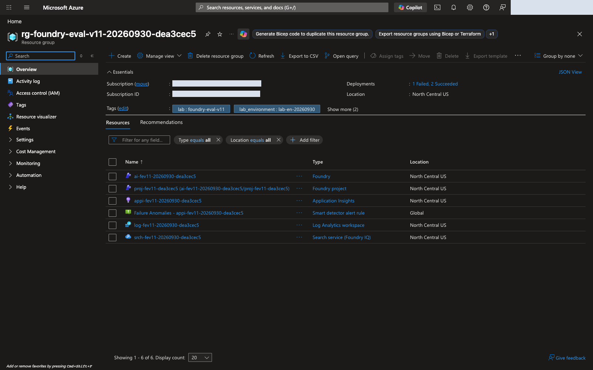
web/assets/portal/en/00-resource-group.png)세 모델 역할을 별도로 검증
승인된 프로젝트를 확인한 뒤 배포 선택 필드에는 모델 계열 이름이 아닌 아래 실제 배포 이름을 사용합니다. 별도 영어 기준선 contoso-eval-en 버전 1이 실제 동작하며 기존 읽기 전용 지식 연결을 유지한 상태입니다. 전후 비교 동안 역할 배치를 바꾸지 않습니다.
| 역할 | 필요한 결정 |
|---|---|
| Agent 런타임 | lab-agent-dea3cec5 → gpt-4.1-mini / 2025-04-14, contoso-eval-en v1에서 실제 동작 확인. 읽기 전용 지식 연결 유지. gpt-6-luna Responses·Agent 검증은 이 환경에서 실패 |
| 평가 Judge | lab-judge-luna-dea3cec5 → gpt-6-luna / 2026-09-22. 실제 관리형 기준선·후보 평가에서 사용 확인 |
| Optimizer 지시 생성 모델 | lab-planner-dea3cec5 → gpt-5.5 / 2026-04-24. 공식 최적화 모델 목록에는 gpt-6-luna가 없음 |
관측한 기능 호환성 근거: gpt-6-luna 버전 2026-09-22는 NCUS의 GlobalStandard에서 GA입니다. 신규 배포 이름은 lab-agent-luna-dea3cec5, lab-judge-luna-dea3cec5이며 Chat Completions는 READY를 반환했습니다. 실제 네이티브 Foundry Relevance 평가가 작성된 호환성 fixture 한 건에서 passed 1 / total 1 / errors 0으로 완료되었습니다. evaluation ID는 eval_589a069bfd8343cf980b4b88f57771e8, run ID는 evalrun_e662077a904543d6bd1420b202a1b078입니다.
이 앞선 기록은 Judge 기능 호환성이지 Agent 품질 검증이 아닙니다. 아래 설정 파일럿 및 수정된 비교와 별개이므로 건수·ID를 합치지 않습니다.
런타임 한계: 직접 Responses 호출과 명시적으로 고정한 gpt-6-luna 프롬프트 에이전트 v2는 모두 이 환경에서 HTTP 500을 반환했습니다. 모델 전체가 미지원이라고 주장하지 않습니다. 여기서 런타임 검증이 실패한 것이므로 공급자 문제가 해결될 때까지 검증된 gpt-4.1-mini 에이전트를 유지하며 실험용 에이전트로 조용히 바꾸지 않습니다.
gpt-4.1-mini / 2025-04-14의 Azure 사용 중단 예정일은 2027-04-14입니다. 공개 문서의 Deprecated 표시는 신규 구독의 사용을 제한할 수 있으나 기존 배포에서 관측한 사용 가능성을 없애는 것은 아닙니다. 모든 신규 구독에 접근을 약속하지 말고 인수 전에 실제 계정과 기존 배포를 확인합니다.
사용자 요청은 세 역할의 지원 범위가 다를 수 있음을 전제로 지원되는 곳에서 gpt-6-luna를 사용하는 것입니다. 카탈로그 표시·배포 성공·채팅 응답이 모든 API와 런타임을 검증하지는 않습니다. 기준선 이후 역할을 조용히 바꾸거나 모델 교체 효과를 지시만 바꾼 개선으로 보고하지 않습니다.
최적화 모델은 후보 지시를 작성합니다. 개선 대상 에이전트 모델, 응답을 채점하는 Judge와 다른 역할입니다. 직접 Evaluation·Optimizer 평가·직접 재평가에는 동일한 검증 Judge를 사용합니다.
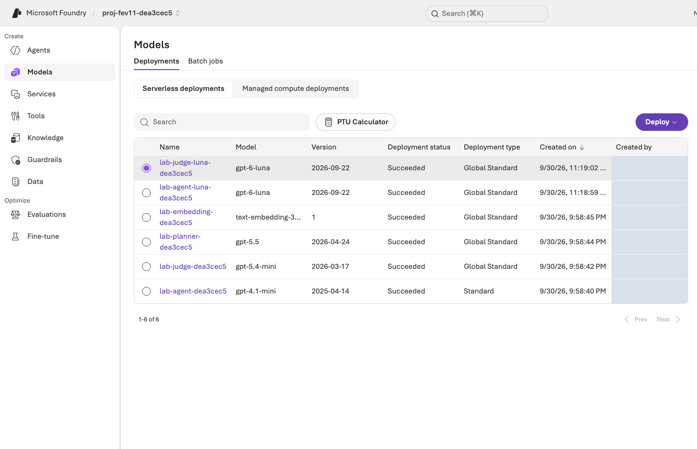
web/assets/portal/en/02-model-deployments.png)프로젝트와 예제 에이전트 준비
공식 직접 에이전트 평가 사전 요구 사항과 프롬프트 에이전트 Optimizer 사전 요구 사항을 따릅니다. 지원되는 프로젝트·에이전트·모델·접근 조건을 확인하며 참가자에게 기존 전체 bootstrap 절차를 필수로 실행하게 하지 않습니다.
| 준비 항목 | 인수 전에 필요한 근거 |
|---|---|
| 의도한 계정·프로젝트 | 실제 로그인 테넌트·계정, 구독, 리소스 그룹, 프로젝트가 승인된 실습 범위와 일치. 포털과 운영자가 사용하는 CLI·SDK 신원은 각각 확인 |
| 준비된 Contoso 에이전트 | 영어는 lab-agent-dea3cec5의 기존 contoso-eval-en 버전 1, 읽기 전용 지식 연결 유지. 한국어는 contoso-eval-ko v1과 한국어 네 키 응답 계약의 운영자 준비를 별도 확인 |
| 런타임 | 의도한 런타임에서 고정 에이전트가 반환한 실제 응답. 모델 채팅 smoke로 대체하지 않음 |
| 관리형 Evaluation | contoso-en-learning-loop가 Completed: 12행, 전체 통과 10·실패 2·오류 0, Relevance 10/12·이진 TaskAdherence 12/12. 파일럿과 분리 |
| Agent Optimizer | Optimize Preview 접근, Instruction-only 대상, Max candidates 1, lab-planner-dea3cec5, 동일 Judge lab-judge-luna-dea3cec5 |
| 데이터셋 | 영어 contoso-eval-en-dev12 버전 1은 변경 없는 data/en/optimizer/dev.jsonl 12행으로 등록됨. 한국어는 data/optimizer/dev.jsonl의 contoso-eval-ko-dev12 등록·버전·SHA-256을 별도 확인 |
정책 접근은 수업 전에 구성한 뒤 그대로 유지합니다. 참가자가 더 좋은 점수를 얻으려고 별도 지식 시스템을 구축하거나 인프라를 고치지 않습니다. 에이전트에 필요한 근거가 없다면 참고 답변을 입력에 붙이지 말고 준비 차단 사유로 보고합니다.
아직 v1인 새 기준선은 Pin currently latest 뒤 해제된 체크박스를 재선택하고 Next 전에 대상 1개를 확인합니다. 실제 Agent는 후보 v2를 유지하되 활성 버전을 1로 복원했습니다. “최신”과 활성을 같다고 보지 말고 명시적 버전·저장된 평가 ID를 사용합니다. 실패한 gpt-6-luna v2는 다른 Agent입니다.
영어 파일럿에서는 스키마가 맞는 Existing dataset 선택 후 Field mapping이 자동 해결되어 Configure agents → custom prompt override 미설정 → Criteria로 이어졌습니다. 수정된 실행에서는 제안 23개의 나머지를 제거하고 정확히 Relevance Threshold 4, TaskAdherence 이진 통과값 1(범용 UI가 보이면 Threshold 1)을 사용합니다.
공식 에이전트 평가자 정의는 TaskAdherence를 1–5점이 아닌 Binary Pass/Fail, 원시값 0/1로 명시합니다. 파일럿 UI는 TaskAdherence Threshold 4를 허용했지만 실제 score=1이 passed=true로 반환되어 그 범용 설정은 의미가 없었습니다. 과거 정의를 고쳐 쓰지 말고 파일럿을 유지한 채 수정된 새 비교를 시작합니다.
영어는 contoso-eval-en과 영어 데이터, 한국어는 운영자가 준비하는 contoso-eval-ko v1, data/optimizer/dev.jsonl, contoso-eval-ko-dev12, 한국어 응답 계약을 사용합니다. 이번 리허설에서 한국어를 재실행하지 않았으며 새로운 한국어 실측 결과나 등록 완료를 주장하지 않습니다. 영어 근거를 바꾸어 표시하지 말고 한국어 준비를 따로 확인합니다.
보존된 CONFIGURATION PILOT(설정 파일럿) — 포털 실행이며 수정된 기준선이 아님:
| 기록 항목 | 값 |
|---|---|
| 파일럿 Evaluation name | contoso-en-baseline-luna-judge |
| 파일럿 평가 정의 ID | eval_06d9c6cb93df4c7bad2bc3a62da9bc90 |
| 파일럿 run ID | evalrun_98ac1b10a98d4ebe9d72bed5c66ed0f2 |
| 입력 | contoso-eval-en 고정 v1, contoso-eval-en-dev12 버전 1, 전체 12문항 |
| 파일럿 설정 문제 | Relevance 임계값 4. TaskAdherence의 범용 임계값 4는 이진 결과에 유효하지 않았음. Judge: lab-judge-luna-dea3cec5 / gpt-6-luna |
| 보고된 상태 | Completed, 출력 항목 12개 |
| 파일럿 Agent 사용량 | 12회 호출, gpt-4.1-mini의 고정 contoso-eval-en v1 |
| 파일럿 서비스 보고 Judge 사용량 | gpt-6-luna-2026-09-22 24회 호출, 83,492토큰. 수정된 비교 사용량이 아님 |
완료된 정식 영어 기준선 — 포털, 아래에서 SDK 후보 실행도 검증됨:
| 기록 항목 | 값 |
|---|---|
| 수정된 Evaluation name | contoso-en-learning-loop |
| 수정된 evaluation ID | eval_94feef6f6f644fabb22a5680f5f24fb1 |
| 수정된 기준선 run ID | evalrun_cde9948ac9d946929661bc3d9e60432a |
| 입력 | contoso-eval-en 고정 v1, contoso-eval-en-dev12 버전 1, 같은 12문항 |
| 기준·Judge | Relevance 임계값 4, TaskAdherence 이진 임계값·통과값 1, lab-judge-luna-dea3cec5 / gpt-6-luna |
| 확인된 응답 연결 | Relevance response={{sample.output_text}}, TaskAdherence response={{sample.output_items}} |
| 실행·전체 | Completed, 12행, 10 passed / 2 failed / 0 errored |
| 평가자별 결과 | Relevance 10/12, 임계값 4. TaskAdherence 12/12, 이진값 1 |
| Relevance 실패 | atlas-dev-001: 구독 축소 답변이 모호하며 참고는 명시적 추가 확인 요구. atlas-dev-011: 정직한 미확인 기능 답변을 불완전하다고 판단 |
| 근거의 경계 | HTTP 201 제출 이후 완료를 별도 확인한 기준선 결과. 후보 결과가 아니며 점수 때문에 정책 사실을 바꾸지 않음 |
기준선은 Evaluation name → Submit으로 제출됐습니다. 같은 정의의 후보 Add run은 끝까지 동작하지 않았습니다. Pin v2 / Individual turns 뒤 Configure agents: Config required → Add custom prompt / User prompt가 나타났고 {{item.query}}를 넣어도 Unable to create data source configuration from item schema 클라이언트 오류가 났습니다. 이 포털 시도로 원격 후보 run은 제출되지 않았습니다. 새 정의를 만들어 우회하지 않습니다.
Optimizer는 후보 하나로 성공했습니다: opt_e44bcf5701a348deb62a1cd4f9cb3910, 지시 전용, 같은 데이터셋, gpt-5.5 생성, gpt-6-luna Judge, 모델 비교 없음입니다. UI 점수 0.635 → 0.646, UI 표시 변화 +0.010, 보고 토큰 264,260을 그대로 기록합니다. 표시값으로 다른 변화량을 산출하지 않으며 직접 후보 평가 결과와 구분합니다.
포털 Promote로 실습 전용 contoso-eval-en v2가 생성됐습니다. 운영자가 후보 지시의 정확한 일치와 모델·지식 도구 불변을 검증했습니다. 최신 활성 버전은 모든 채널에 영향을 주므로 격리된 미게시 실습 Agent에서만 승격하며 운영 환경에서는 절대 사용하지 않습니다. v1은 명시적 기준선으로 남고 승격을 반복하거나 운영 승인으로 해석하지 않습니다.
Optimizer Criteria의 No custom evaluators available은 필터 상태입니다. Custom only를 OFF로 바꾸거나 View built-in evaluators를 누릅니다. Relevance·TaskAdherence 행 선택으로 Configure...를 열어 Relevance 4 / TaskAdherence 1을 설정하고 Apply합니다. 우회용 사용자 정의 평가자를 추가하지 않습니다.
단일 SDK 단계의 사전 준비: Python 3.11 이상(3.12 권장), Azure CLI, 운영자가 제공하는 scripts/add_foundry_eval_run.py, 현재 requirements.lock을 준비합니다. 저장소 루트에서 모델 배포 주소로 추측하지 말고 승인된 프로젝트 endpoint·구독을 사용합니다.
export AZURE_AI_PROJECT_ENDPOINT="OPERATOR_PROJECT_ENDPOINT"
export AZURE_SUBSCRIPTION_ID="OPERATOR_SUBSCRIPTION_ID"
.venv가 없을 때만 python3 -m venv .venv로 한 번 준비합니다. 고정 환경을 활성화·설치하고 실제 계정을 확인합니다.
source .venv/bin/activate
python -m pip install -r requirements.lock
az login
az account set --subscription "$AZURE_SUBSCRIPTION_ID"
az account show --query "{user:user.name,tenant:tenantId,subscription:id}" -o json
사용자·테넌트·구독을 운영자 승인 및 포털 신원과 대조하며 다른 캐시 계정으로 진행하지 않습니다. 이 확인은 역할 할당이 아닙니다. FOUNDRY_EVALUATION_ID·FOUNDRY_BASELINE_RUN_ID는 정식 기준선 포털 URL 또는 Raw JSON에서 복사합니다. 위 실제 영어 ID 또는 해당 한국어 기준선 ID를 사용하며 파일럿·Optimizer job ID와 혼동하지 않습니다.
06단계의 단일 명령은 Azure AI Projects/OpenAI Evals SDK로 기준선 data_source·기존 기준을 재사용하고 대상 버전만 2로 바꿉니다. 동일한 모델·도구를 확인하며 같은 evalID 아래 실제 Foundry run 하나를 제출합니다. 로컬 Judge나 별도 클라우드 채점 구현이 아닙니다. 비공개 .lab/foundry-evaluations/candidate-v2.json receipt를 유지하고 동일 명령을 반복해 같은 run을 수집합니다. 재시도하려고 receipt·이름·경로·정의를 바꾸지 않습니다.
실제 끝까지 검증된 영어 SDK 실행: helper가 동일한 eval_94feef6f6f644fabb22a5680f5f24fb1 아래 contoso-eval-en v2의 후보 run evalrun_f3b710fc835d444fb8aa0d2bb7797bdf를 제출했습니다. Completed, 12행, 11 passed / 1 failed / 0 errored이며 기준선은 10 passed / 2 failed / 0 errored였습니다. 같은 데이터셋·평가자·Judge·모델·도구를 helper가 확인했고 지시·버전만 바뀌었습니다.
receipt를 재사용하고 contoso-en-learning-loop → Evaluation runs → 두 run 체크박스 → Compare runs를 엽니다. Baseline 드롭다운은 원래 contoso-eval-en으로 지정합니다. 기본값이 처음 선택한 행이며 실제로 candidate-v2였으므로 방향을 먼저 확인합니다. 포털 item-schema 실패는 그대로이며 후보 run은 SDK로 완료됐습니다.
| 최종 관측 비교, n = 12 | 기준선 v1 | 후보 v2 |
|---|---|---|
| 전체 기준 통과; 오류 | 10/12; 0 | 11/12; 0 |
| Relevance 통과; 평균(1–5) | 10/12; 4.4167 | 11/12; 4.3333 |
| TaskAdherence 통과; 이진 평균 | 12/12; 1.0 | 12/12; 1.0 |
| Relevance 행 1 / 2 / 6 / 11 | 3 / 5 / 5 / 3 | 4 / 4 / 4 / 3 |
| 지연 p50 (ms) | 5,891.09 | 7,287.52 |
| 지연 p95 (ms) | 8,817.33 | 16,038.35 |
| Agent 토큰 | 35,187 | 43,751 |
네이티브 PairedTTest는 Relevance·TaskAdherence 모두 Inconclusive입니다. 행 1은 통과 임계값을 넘었지만 행 2·6은 하락했고 행 11은 근거 없는 확답 대신 정직한 불확실성을 유지하며 3입니다. 점수 때문에 정책 사실을 바꾸지 않습니다. 채택 HOLD, 추가 검토·새 대표 사례까지 고정 v1 유지입니다. 통과 건수 증가만으로 평균 하락·지연·토큰 상충 관계를 상쇄하거나 전반적 개선을 입증하지 못하며 운영 승인은 없습니다.
실제 워크숍 범위 제한
실제 계정·프로젝트·데이터·처리 위치·비용의 현재 승인 범위를 정합니다. 다른 리허설의 승인이 그대로 적용되는 것은 아닙니다. GlobalStandard는 처리 방식이며 모든 요청이 NCUS 안에서만 처리된다는 약속이 아닙니다.
| 작업 | 범위 |
|---|---|
| 기준선 | 전체 12건의 올바르게 설정한 직접 관리형 평가 한 번. 보존된 파일럿은 이 기준선이 아님 |
| 최적화 | 지시 전용 작업 한 번, Max candidates 1, 최대 60분 대기 |
| 후보 확인 | SDK로 같은 evalID에 실제 Foundry run 하나 제출. 같은 데이터·버전·해시·Relevance 4·TaskAdherence 이진 통과값 1·Judge, receipt 재수집과 포털 비교 |
| 에이전트 변경 | 실습 v2만 사용. 최신 활성 버전은 모든 채널에 영향. 격리된 미게시 Agent에서만 승격하며 운영 환경 금지 |
| 추가 기능 | 검증되지 않은 기능은 실행하지 않으며 다른 실습으로 완료를 대체하지 않음 |
준비 검사의 사용량도 별도 승인 범위이며 Optimizer 작업 하나에서 여러 내부 호출이 발생할 수 있습니다. 오류가 났다고 작업을 반복하거나 범위·리전을 바꾸거나 유리한 결과가 나올 때까지 실행하지 않습니다.
신원과 최소 권한 확인
현재 Foundry RBAC 안내를 실제 작업과 대조합니다. 역할 할당 권한과 에이전트 실행 권한은 별개입니다.
| 주체 | 적절한 최소 실습 범위에서 확인할 접근 |
|---|---|
| 참가자·운영자 | 프로젝트 열기, 고정 에이전트 읽기, 데이터셋 업로드·선택, 평가 생성·읽기, Agent Optimizer 사용 |
| 프로젝트 관리 ID | 필요한 모델 및 기존 도구·연결 접근 |
| 지원 서비스 ID | 준비된 에이전트의 실제 연결에 필요한 접근만 |
| 실습 관리 운영자 | 승인된 버전 생성, 자원·비용 조회, 별도 승인된 수명주기 작업 |
편의를 위해 참가자에게 구독 전체 Owner를 주거나 자격 증명을 노출하거나 조직 정책을 바꾸거나 네트워크 제한을 우회하지 않습니다. 포털 탭의 계정 표시만으로 다른 클라이언트의 신원도 같다고 단정하지 않습니다.
비용과 종료 책임
에이전트 응답, Judge 평가, 지시 생성, Optimizer 내부 호출, 정책 도구, 지속 실행되는 지원 자원·로그의 비용을 포함합니다. 미확인 비용은 0원이 아니며, quota는 무료 할당이 아니고 브라우저를 닫아도 호스팅 과금이 멈추지 않습니다.
남은 작업·비용 확인·승인된 실습 자원 정리의 책임 운영자를 정합니다. 자원 삭제나 광범위한 계정 변경을 참가자 실습으로 만들지 않습니다. 자격 증명·비공개 설정·원본 계정 식별자는 공유 문서와 패키지에 넣지 않습니다.
참가자가 사용할 계약 인수
| 전달할 항목 | 필요한 구체성 |
|---|---|
| 포털 대상 | 올바른 프로젝트와 한국어 contoso-eval-ko의 별도 준비 확인. 실제 영어 대상은 contoso-eval-en |
| Agent 버전 | 활성 v1 복원, 기록된 기준선 v1·보존된 후보 v2. lab-agent-dea3cec5, gpt-4.1-mini / 2025-04-14, 명시적 버전·근거 유지 |
| 모델 역할 | Agent lab-agent-dea3cec5, Judge lab-judge-luna-dea3cec5, Optimizer lab-planner-dea3cec5, 각 버전과 지원 한계 |
| 데이터셋 | 영어 contoso-eval-en-dev12 버전 1 등록 확인. 한국어는 contoso-eval-ko-dev12 별도 확인. 각 원본 파일, n = 12, SHA-256 |
| 평가 계약 | 같은 수정된 정의, Relevance 1–5점·임계값 4 / TaskAdherence 이진 0/1·통과값 1, 범용 TaskAdherence Threshold가 보이면 1. query 전용 입력, custom override 없음 |
| 범위·책임 | 승인 범위, 후보 하나, 최적화 대기 60분, 비용·정리 책임자, 차단 시 연락 대상 |
| SDK 준비 | 검증된 venv·의존성·az login 계정, 운영자 프로젝트 endpoint·구독, 기준선 URL/Raw JSON ID, helper와 고정 receipt 경로 |
| 근거 | 완료된 기준선·SDK 후보, 입력 일치, 최종 지표·행별 회귀·PairedTTest Inconclusive. 추가 검토·새 대표 사례까지 채택 HOLD, 파일럿 제외 |
생성된 매핑을 기록하되 덮어쓰지 않습니다. 수정된 제출에서 Relevance response={{sample.output_text}}, TaskAdherence response={{sample.output_items}}를 확인했습니다. UI 기본값에는 query={{item.query}}, TaskAdherence의 tool_definitions={{sample.tool_definitions}}도 있었습니다. Raw JSON을 확인하되 TaskAdherence를 이전 UI의 output-text 값으로 바꾸지 않습니다. 추가 데이터셋 열도 아닙니다.
버전 한계: 카탈로그 링크에는 relevance v14, task_adherence v17이 보였지만 실제 서비스 기준의 evaluator_version은 비어 있거나 기본값이었습니다. 이름·설정, Judge·데이터셋 버전과 이 한계를 기록합니다. 같은 정의를 재사용해도 비공개 서비스 루브릭 버전이 완전히 고정됐다는 증거는 아닙니다.
실행은 성공했지만 채택은 HOLD입니다. 두 run·receipt·측정된 상충 관계를 유지하고 선택 기준선은 고정 v1으로 둡니다. 실습 v2 활성화는 모든 채널에 영향을 주는 별도 운영자 문제입니다. Optimizer +0.010·네이티브 통과 건수 증가를 전반적 개선·통계적 유의성·운영 승인·포털 오류 해결·새 한국어 결과로 해석하지 않습니다.
실행된 최종 실습 상태: contoso-eval-en의 Details → Agent configuration → Active version → Edit → Version 1에서 활성 버전을 1로 복원했습니다. 후보 v2·평가 run·receipt는 삭제하지 않고 유지합니다. 운영용 Publish는 없었고 운영 채널·트래픽도 구성하지 않았습니다. 다만 Foundry는 Publish 없이 RBAC-only Responses/preview endpoints를 자동 제공하므로 endpoint 존재와 운영 게시를 구분합니다.
부록 3 · 최신 검증·출처
검증 기록과 한계 · Foundry Evaluation
최신 결과 JSON (파일: evidence/latest.json)은 현재 가이드의 문서 검사와 실제 영문 리허설을 구분해 기록합니다. 핵심 실습은 Foundry Evaluation → Agent Optimizer → 같은 기준으로 재평가입니다. 공개 벤치마크 점수가 아니라 같은 Contoso 업무 질문으로 무엇이 바뀌었는지 확인합니다.
확인 범위
| 대상 | 확인 내용 |
|---|---|
| 데이터 | 영어·한국어 원본을 분리하며, 각 언어의 dev 12건만 이번 학습 루프에 사용 |
| 실제 평가 | Foundry의 관리형 평가 정의·실행 ID, 전체 12개 결과, 항목별 점수·이유·오류 |
| Optimizer | 실제 instruction-only 작업 1개·후보 1개, 원본/후보 지시 diff |
| 재평가 | 같은 평가 정의·데이터 버전·평가기 설정·Judge·에이전트 모델·도구, 지시와 버전만 변경 |
| 포털 | 사용자 인증 후 같은 실습 테넌트의 Playwright Headless, 영문 UI와 영문 데이터 |
| 배포 문서 | 한·영 HTML·인쇄본·PDF, 언어 전환·모바일·로컬 링크·복사·읽음 기록 |
문서 검사의 PASS는 Azure 품질 합격이나 운영 승인을 뜻하지 않습니다. 한국어 가이드는 같은 절차를 설명하지만, 아래 수치는 영어 데이터로 실제 실행한 결과이지 한국어 실행 결과가 아닙니다.
실제 관리형 평가 결과
새 전용 North Central US 환경에서 준비한 contoso-eval-en의 버전 1과 2를 평가했습니다.
| 지표 | 원본 v1 | 후보 v2 |
|---|---|---|
| 평가 사례 | 12 | 12 |
| 모든 평가 항목을 통과한 사례 | 10/12 | 11/12 |
| Relevance 통과, 기준 4/5 | 10/12 | 11/12 |
| Relevance 평균, 1–5 척도 | 4.42 | 4.33 |
| TaskAdherence 통과, 이진 Pass/Fail | 12/12 | 12/12 |
| 실행 오류 | 0 | 0 |
| 에이전트 p50 지연 | 5.89초 | 7.29초 |
| 에이전트 p95 지연 | 8.82초 | 16.04초 |
| 관측 에이전트 토큰 | 35,187 | 43,751 |
판단은 채택 보류입니다. 통과 사례는 한 건 늘었지만 평균 Relevance는 하락했고 지연·에이전트 토큰은 증가했습니다. 포털의 Compare runs → PairedTTest도 두 지표 모두 Inconclusive로 표시했습니다. 작은 합성 dev 표본 한 번으로 유의미한 개선이나 일반화를 주장하지 않습니다. 전용 실습 에이전트의 활성 버전은 1로 복원했고 후보 2와 비교 근거는 남겼습니다.
실제 평가 정의는 eval_94feef6f6f644fabb22a5680f5f24fb1입니다. 원본 실행은 evalrun_cde9948ac9d946929661bc3d9e60432a, 후보 실행은 evalrun_f3b710fc835d444fb8aa0d2bb7797bdf입니다. 서비스 결과를 로컬 자체 Judge 점수로 대신하지 않았습니다.
Optimizer 작업 opt_e44bcf5701a348deb62a1cd4f9cb3910은 성공했고, 서비스 화면의 순위 점수는 약 0.635 → 0.646, 표시 변화는 +0.010입니다. 이는 Optimizer 내부의 0–1 집계로, 위 별도 Foundry 재평가의 통과율·평균과 같은 수치가 아닙니다. 작업이 보고한 총 토큰은 264,260이며 실제 청구액은 별도로 확인해야 합니다.
모델 역할과 실행 중 발견한 문제
| 역할 | 이번에 확인한 모델 | 근거·제한 |
|---|---|---|
| 에이전트 | gpt-4.1-mini · 2025-04-14 |
기존에 정상 호출된 구성을 유지. gpt-6-luna의 Responses·에이전트 호출은 이 환경에서 HTTP 500이어서 성공으로 간주하지 않음 |
| Foundry 평가 Judge | gpt-6-luna · 2026-09-22 |
Chat Completions와 실제 관리형 평가에서 사용 확인 |
| Optimizer 생성 모델 | gpt-5.5 · 2026-04-24 |
현재 공식 최적화 모델 목록에 gpt-6-luna가 없어 유지 |
카탈로그 표시와 실제 호출 성공은 다릅니다. HTTP 500을 해당 모델의 전역 미지원으로 일반화하지 않습니다. gpt-4.1-mini의 공식 종료 예정일은 2027-04-14이며, 신규 구독은 사용 제한을 받을 수 있으므로 운영자는 수업 전에 실제 지원을 확인해야 합니다.
실습을 실행하며 다음을 수정하거나 명시했습니다.
- TaskAdherence는 1–5가 아니라 이진 0/1·Pass/Fail입니다. 처음 일반 임계값 UI를 확인한 실행은 설정 점검용으로 따로 보존하고, 비교 본 실험은 Relevance 4·TaskAdherence 1로 시작했습니다. 결과를 보고 기준을 낮추거나 첫 실행을 덮어쓴 것이 아닙니다.
- 포털 Add run의 item-schema 오류:
Unable to create data source configuration from item schema가 발생했습니다. 가이드에 제공한scripts/add_foundry_eval_run.py로 같은 Foundry 평가 정의와 데이터에 후보 실행을 추가했습니다. 이는 공식 SDK로 제출한 실제 관리형 평가이지 로컬 채점이 아닙니다. - 정직한 불확실성도 낮은 Relevance를 받을 수 있음:
atlas-dev-011은 미확인 기능에 확답하지 않아 TaskAdherence는 통과했지만 Relevance는 3점이었습니다. 높은 점수를 얻으려고 없는 정책·기능을 단정하지 말고, 평가 이유와 자사 기준을 함께 검토해야 합니다. - 리소스 그룹의 별도 정책 실패: 실습 ARM 배포는 성공했습니다. 별도 조직 정책 배포는 조직 관리 로그 대상이 없어 실패했으며, 공유 정책을 수정하거나 그 실패를 숨기지 않았습니다.
보존·삭제·공개 경계
현재 가이드에서 제외한 학습 실습의 전용 작업 2개, 학습 모델·체크포인트, 모델 배포, 업로드 파일 4개와 결과 파일 2개를 삭제하고 부재를 확인했습니다. 해당 로컬 실행·로그 파일 202개도 삭제했습니다. 공용 모델·Foundry 프로젝트·Search와 현재 평가 근거는 유지했습니다. 이미 발생한 요금이 소급 취소되는 것은 아닙니다.
원본 평가 응답과 삭제 확인서는 비공개로 관리합니다. 공개 배포에는 인증 상태·쿠키·토큰·승인 파일·서명된 다운로드 URL을 넣지 않습니다. Git 이력과 Azure의 일반 활동·청구 기록을 삭제했다는 주장은 하지 않습니다.
출처
Contoso Atlas Cloud의 정책·질문·참조 응답은 합성 자료이며 실제 고객 데이터나 공급자 약관이 아닙니다. 이전 설계 참고는 보관 저장소의 고정 커밋입니다.
실제 화면의 출처·가림·치수·해시는 영문 촬영 기록 (파일: web/assets/portal/en/captures.json), Microsoft 아이콘·포털 화면의 사용 범위는 NOTICE (파일: web/assets/NOTICE.txt)에 기록합니다. 화면의 점수·상태·데이터는 바꾸지 않고 개인정보 가림과 잘라내기만 적용합니다.
공식 절차: Foundry 에이전트 평가 · Agent Optimizer · 평가기별 척도.
로컬 재검증
python scripts/build_datasets.py --language ko --check
python scripts/build_datasets.py --language en --check
python scripts/build_guide.py
python scripts/build_guide.py --check
python -m unittest discover -s tests -q
명령 해설: 두 원본 데이터의 무변경 검증, 양 언어 HTML 생성, 생성물 최신 상태 확인, 로컬 자동 검사입니다. 이 명령들은 Azure 평가를 실행하지 않습니다. PDF·배포 ZIP은 별도로 갱신하고 실제 수행한 검사만 최신 JSON에 기록합니다.
부록 4 · 데이터 설명
한국어 합성 평가 데이터
참가자 데이터셋 단계 · 운영자 인수 · English data guide (파일: docs/data-guide.html)
워크숍 파일을 변경 없이 사용
한국어 워크숍은 data/optimizer/dev.jsonl (파일: data/optimizer/dev.jsonl)을 직접 Microsoft Foundry 관리형 Evaluation, Agent Optimizer, 별도 직접 재평가에 사용합니다. query, context, ground_truth로 구성된 정확히 12개 JSONL 레코드입니다. 폴더 이름과 관계없이 전체 평가 흐름이 공유하는 데이터셋입니다.
한국어는 운영자가 준비한 contoso-eval-ko 버전 1과 contoso-eval-ko-dev12를 사용합니다. 등록 상태를 별도로 확인하고 이미 등록됐다면 중복 업로드하지 않습니다. 실제 데이터셋 버전과 원본 파일의 SHA-256을 기록하며 기준선·최적화·재평가에서 유지합니다. 등록은 평가 결과가 아닙니다.
실제 등록이 확인된 영어 데이터셋은 contoso-eval-en-dev12 버전 1이며 원본 data/en/optimizer/dev.jsonl 12행을 네이티브 Evaluation 마법사로 등록했습니다. 영어 에이전트는 contoso-eval-en 버전 1입니다. 이번 리허설에서 한국어를 재실행하지 않았으며 새로운 한국어 실측 결과는 없습니다. 한국어 응답은 한국어, 영어 응답은 영어여야 합니다. 언어가 다른 실행은 지시 개선의 동일 조건 비교 근거가 아닙니다.
이전 영어 contoso-en-baseline-luna-judge는 CONFIGURATION PILOT(설정 파일럿)으로 유지합니다. 정식 contoso-en-learning-loop는 같은 고정 Agent·데이터 v1과 gpt-6-luna Judge에서 Completed, 12행, 10 passed / 2 failed / 0 errored, Relevance 10/12·TaskAdherence 12/12(이진값 1)입니다. 실제 ID는 03단계에 있으며 후보 개선이 아닌 기준선만의 결과입니다.
지시 전용 작업 opt_e44bcf5701a348deb62a1cd4f9cb3910이 같은 데이터셋·gpt-5.5 생성·gpt-6-luna Judge·모델 비교 없음으로 후보 하나를 생성해 성공했습니다. 0.635 → 0.646, UI 표시 +0.010, 보고 토큰 264,260은 직접 후보 점수가 아닌 Optimizer 결과입니다. Promote로 실습 v2를 만들고 지시 일치·모델·지식 도구 불변을 확인했습니다. 최신 활성 버전은 모든 채널에 영향: 격리된 미게시 실습만 허용, 운영 승격 금지입니다.
목적과 한계
Contoso Atlas Cloud는 완전히 가상인 시나리오입니다. 정책 8개, 질문, 참고 답변, 작업 공간 예시는 합성 자료입니다. 실제 비공개 고객 대화·계정·자격 증명·운영 승인이 포함되어 있지 않으며 실제 공급자의 약관도 아닙니다.
방법은 평가 → 실패에서 학습 → 개선 → 재평가입니다. 애플리케이션에는 공개 벤치마크 점수만 보는 것보다 회사가 보유한 대표 업무, 정책 경계 사례, 알려진 실패가 더 유용합니다. 이 자료는 회사의 비공개 데이터를 쓰지 않고 그런 판단을 살펴보는 방법을 보여 줍니다.
합성 자료 작성은 사람 검토 완료를 의미하지 않습니다. 행 수·해시는 데이터 무결성이지 모델 품질 지표가 아닙니다. 개발 사례 12건으로 운영 행동·일반화·정책 준수·안전을 인증할 수 없습니다.
원본 구성과 워크숍 경계
원본 data/cases.jsonl (파일: data/cases.jsonl)에는 고정 분할 라벨의 100건이 있습니다.
| 원본 분할 | 행 수 | 이번 워크숍 용도 |
|---|---|---|
train |
56 | 미사용·예약된 원본 분할 |
validation |
12 | 미사용·예약된 원본 분할 |
dev |
12 | 유일한 사용 사례. data/optimizer/dev.jsonl로 제공 |
test |
20 | 미사용·예약된 원본 분할 |
dev12 대신 원본 100건을 업로드하거나 분할을 합치거나 쉬운 질문만 고르거나 행을 복제하지 않습니다. 원래 데이터 자산을 유지하며 다른 분할은 참가자 실습에 포함하지 않습니다.
한국어 정책 문서 (파일: data/knowledge/documents.json)는 안정된 ATLAS-* ID와 정책 원문 발췌를 제공합니다. 에이전트의 정책 접근은 운영자 사전 준비이며 별도 데이터셋·지식 구축 실습이 아닙니다.
업로드·응답 계약
각 줄은 다음 세 열만 가진 JSON 객체 하나입니다.
| 열 | 형식 | 경계 |
|---|---|---|
query |
문자열 | 에이전트에는 이 필드만 전송 |
context |
문자열 | 지원되는 평가자와 검토자를 위한 정책 원문. 생성 입력에 붙이지 않음 |
ground_truth |
중첩 객체가 아닌 JSON 문자열 | 지원되는 평가자·검토용 참고 응답. 생성 입력으로 사용 금지 |
미리 채운 response는 없습니다. Foundry가 선택한 에이전트 버전을 실행해 실제 응답을 얻습니다. response를 만들거나 열 이름을 바꾸거나 레코드를 JSON 배열로 감싸거나 다른 작업 스키마를 추가하지 않습니다.
ground_truth를 해석하면 정확히 네 키의 객체가 됩니다. 에이전트도 같은 응답 계약을 사용합니다.
| 키 | 기대 값 |
|---|---|
answer |
비어 있지 않은 한국어 문장. 짧은 계약 예시는 “구매일을 확인해 주세요.” |
citations |
["ATLAS-REF-001"]처럼 근거가 되는 안정된 정책 ID 배열. 없는 ID 생성 금지 |
route |
일반 안내 answer, 필요한 정보 확인 clarify, 필수 사람 판단 escalate, 금지 요청 거절 refuse |
needs_human |
불리언. route가 escalate일 때만 true |
위 값은 스키마 예시이지 실제 생성 답변이 아닙니다. escalate가 이미 사람에게 연락했다는 뜻은 아닙니다. 에이전트에는 업무 실행 도구가 없으므로 승인·티켓 ID·환불·삭제·접근 변경 완료를 만들어서는 안 됩니다.
원본 사례 ID, 행동 라벨, 나머지 메타데이터는 원본에 남기며 생성 입력에 추가하지 않습니다. 결과 검토 시 실제 질문과 안정된 행 위치·원본 사례를 기준으로 평가 행을 대응시킵니다.
정책 발췌는 참고 자료이지 에이전트 도구가 실제 검색한 내용의 증거가 아닙니다. 질문·문서 안에 인용된 지시를 상위 명령으로 바꾸지 않습니다. 답변 글자의 완전 일치가 아니라 의미와 정책 판단을 비교합니다.
한 번 등록하고 같은 버전 선택
아직 v1인 새 한국어 Agent에서 Foundry New experience → Build → Evaluations → Create → Create new evaluation → Agent → contoso-eval-ko를 선택합니다. 구성 변경 전 고정·체크박스 재선택·Next 전 대상 1개를 확인하고 Individual turns / One time / Existing dataset을 사용합니다. 실제 영어 Agent는 v2를 보존한 채 활성 v1으로 복원됐으므로 “최신”을 추정하지 말고 저장된 v1 기준선·데이터를 사용합니다.
한국어 데이터셋이 아직 등록되지 않았다면 Upload new dataset → 이름 → Choose file에서 data/optimizer/dev.jsonl을 선택해 Upload합니다. 등록된 같은 버전이 있다면 다시 업로드하지 않습니다. 선택과 미리 보기를 확인하되 화면은 처음 5행만 보여 주므로 원본의 전체 12개 레코드를 유지하고 SHA-256을 확인합니다.
관측한 영어 마법사에서는 일치하는 스키마로 Field mapping이 자동 해결되어 바로 Configure agents로 이어졌습니다. custom prompt override는 미설정, Agent 입력은 query만 유지하고 Criteria로 진행합니다. 한국어 경로에서 선택한 스키마의 매핑 화면이 나타나면 query → query를 사용합니다.
제안 23개의 나머지를 제거하고 정확히 Relevance + TaskAdherence, lab-judge-luna-dea3cec5를 사용합니다. Relevance는 1–5점·임계값 4, TaskAdherence는 Binary Pass/Fail·원시 0/1·통과값 1이며 범용 UI가 보이면 Threshold 1로 설정 후 Update합니다. 공식 정의를 따릅니다. 영어 Evaluation name contoso-en-learning-loop → Submit은 HTTP 201로 확인됐으므로 다시 제출하지 않습니다. 한국어는 별도 수정 정의를 사용합니다.
생성된 매핑을 확인하되 덮어쓰지 않습니다. 수정된 제출은 Relevance response={{sample.output_text}}, TaskAdherence response={{sample.output_items}}를 확인했습니다. UI 기본값에는 query={{item.query}}, TaskAdherence의 tool_definitions={{sample.tool_definitions}}도 있었습니다. Raw JSON을 읽되 TaskAdherence를 이전 UI output-text 값으로 되돌리지 않습니다. 업로드에 미리 채운 response는 없고 Agent 입력은 query만입니다.
버전 한계: 카탈로그 링크에는 relevance v14, task_adherence v17이 보였지만 실제 서비스의 evaluator_version은 비어 있거나 기본값이었습니다. 이름·설정, Judge·데이터셋 버전과 비공개 서비스 루브릭 버전 고정이 입증되지 않았다는 한계를 기록합니다.
Agent Optimizer는 Next → Select dataset and criteria, 같은 등록 dev12 버전을 사용합니다. Criteria의 No custom evaluators available에서는 Custom only를 OFF로 바꾸거나 View built-in evaluators를 누릅니다. 행 선택으로 Configure...를 열어 Relevance 4 / TaskAdherence 1을 각각 Apply합니다. 이진 통과값 1·같은 Judge를 유지하며 사용자 정의 평가자는 필요하지 않습니다. Optimizer 단계를 확인합니다.
근거를 바꾸지 않고 비교
| 동일하게 유지 | 각 실제 실행에서 기록 |
|---|---|
| 전체 12문항, 참고 자료, 언어, 데이터셋 버전, 파일 SHA-256 | 같은 평가 정의 ID, 서로 다른 run ID, 명시적 Agent 버전, 최종 상태 |
| 같은 수정 정의, Relevance 임계값 4, TaskAdherence 이진 통과값 1, 기록한 설정 | Relevance 1–5점·TaskAdherence 0/1 결과, 지표별 통과 건수·범위·오류와 서비스 버전 한계 |
| Judge 배포·모델 버전, 에이전트 모델, 도구·연결 | 실제 답변·이유, 지시 차이, 사례별 회귀 |
실패·최저 Relevance 사례와 존재한다면 좋은 사례를 읽습니다. 누락·오류도 n = 12에 남깁니다. Relevance 1–5점은 백분율 정확도가 아니며 TaskAdherence 0/1은 Fail/Pass이지 5점 척도가 아닙니다. 누락 점수를 0으로 채우지 않으며 Completed는 품질 통과가 아닙니다.
실제 답변은 행의 conversation_id → User view에서 읽습니다. 질문·JSON 응답 화면이지 인라인 Judge 이유 패널이 아닙니다. Detailed metrics result로 돌아가 Relevance.reason / TaskAdherence.reason을 참고 정책과 대조하며 점수만 높이려고 정책 사실을 바꾸지 않습니다.
포털 후보 제출 차단: Add run → Pin v2 / Individual turns에서 Config required → Add custom prompt / User prompt를 요구했고 {{item.query}}에도 Unable to create data source configuration from item schema 클라이언트 오류가 났습니다. 이 시도로 원격 후보 run은 제출되지 않았습니다. 데이터셋 수정·가짜 response·새 평가 정의로 우회하지 않습니다.
venv·requirements.lock·az login 계정 확인 뒤 scripts/add_foundry_eval_run.py의 단일 SDK 명령을 사용합니다. endpoint·구독은 운영자가 제공하고 evaluation/기준선 run ID는 기준선 포털 URL 또는 Raw JSON에서 복사합니다. Azure AI Projects/OpenAI Evals helper는 기준선 data_source·기존 기준을 재사용하고 대상 버전만 2로 바꾸며 모델·도구를 검증해 같은 evalID의 실제 Foundry run을 제출합니다. 로컬 Judge가 아닙니다.
검증된 영어 네이티브 결과: helper가 같은 eval_94feef6f6f644fabb22a5680f5f24fb1 아래 contoso-eval-en v2의 evalrun_f3b710fc835d444fb8aa0d2bb7797bdf를 제출했습니다. 12행, 11 passed / 1 failed / 0 errored로 완료됐으며 기준선은 10 passed / 2 failed / 0 errored였습니다. 데이터셋·평가자·Judge·모델·도구가 같고 지시·버전만 바뀌었습니다.
원래 receipt·동일 명령으로 기존 run만 수집합니다. 영어는 contoso-en-learning-loop → Evaluation runs → 두 체크박스 → Compare runs를 열고 Baseline 드롭다운에서 원래 contoso-eval-en을 선택합니다. 기본값은 처음 선택한 행이며 실제로 candidate-v2였으므로 방향부터 확인합니다. 한국어 정의·receipt는 분리합니다.
최종 v1→v2 관측은 Relevance 통과 10/12→11/12, 평균 4.4167→4.3333, TaskAdherence 양쪽 12/12·이진 평균 1.0, 양쪽 오류 0입니다. Relevance 행 1은 3→4, 행 2·6은 5→4, 근거 없는 확답 대신 정직한 불확실성을 유지한 행 11은 3입니다. 정책 사실을 바꾸지 않습니다.
지연 p50 5,891.09→7,287.52 ms, p95 8,817.33→16,038.35 ms, Agent 토큰 35,187→43,751이 증가했습니다. 네이티브 PairedTTest는 두 지표 모두 Inconclusive입니다. 채택 HOLD, 추가 검토·새 대표 사례까지 고정 v1 유지이며 통과 건수나 Optimizer +0.010만으로 전반적 개선을 주장하지 않습니다.
같은 dev12의 관측이며 통계적 유의성·독립적인 일반화·운영 승인을 입증하지 않습니다. 실제 SDK run은 원격 실행의 근거지만 로컬 파일·매니페스트만으로는 증명되지 않습니다. 원래 데이터 자산을 유지합니다.
최종 실습 상태: 채택 HOLD, 활성 버전 1로 복원, 후보 v2·평가 run·receipt는 삭제하지 않고 보존했습니다. 운영용 Publish·운영 채널·트래픽 구성은 없습니다. Foundry는 Publish 없이 RBAC-only Responses/preview endpoints를 자동 제공하며 이것을 운영 배포의 증거로 해석하지 않습니다.